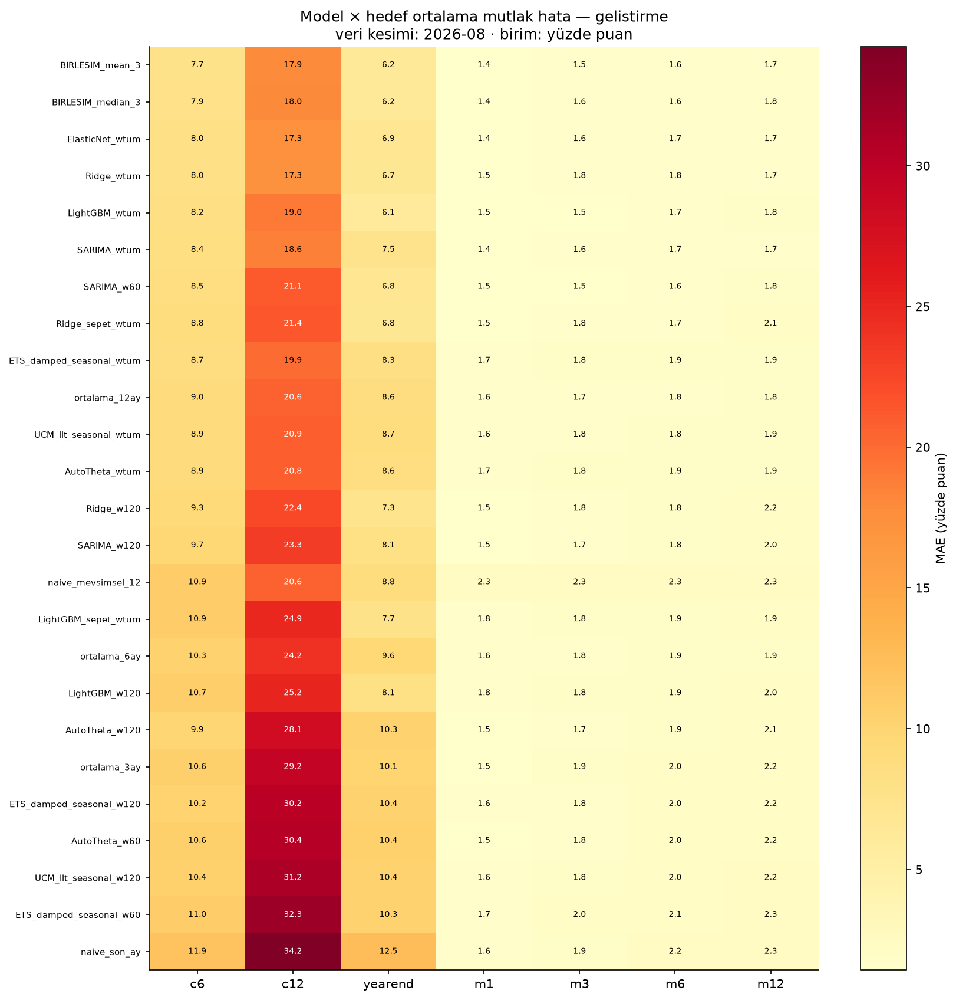
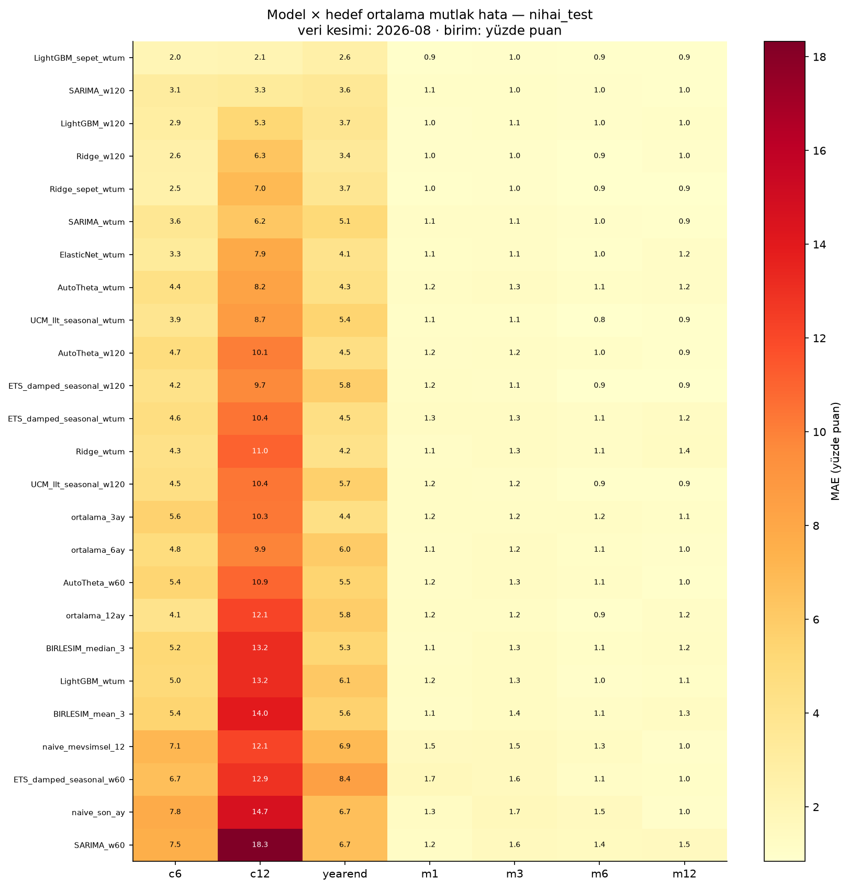
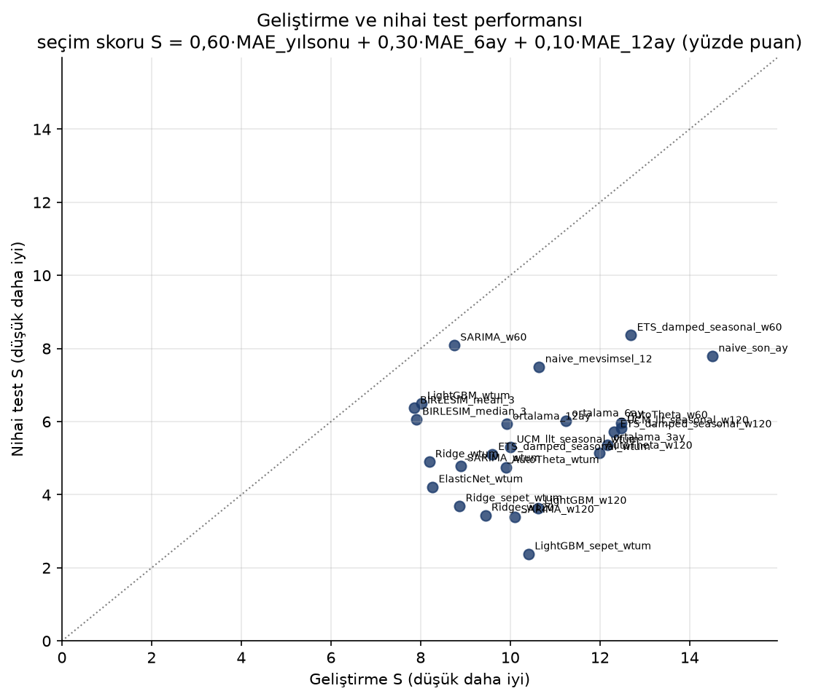
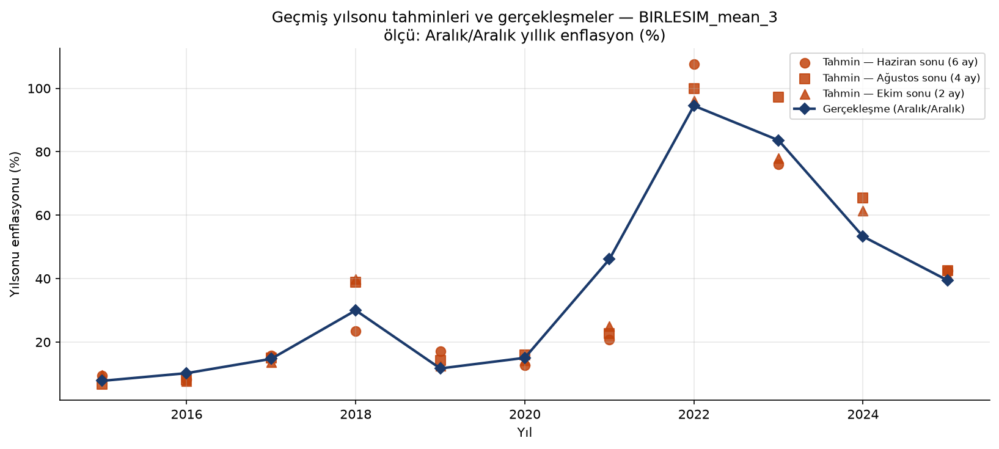
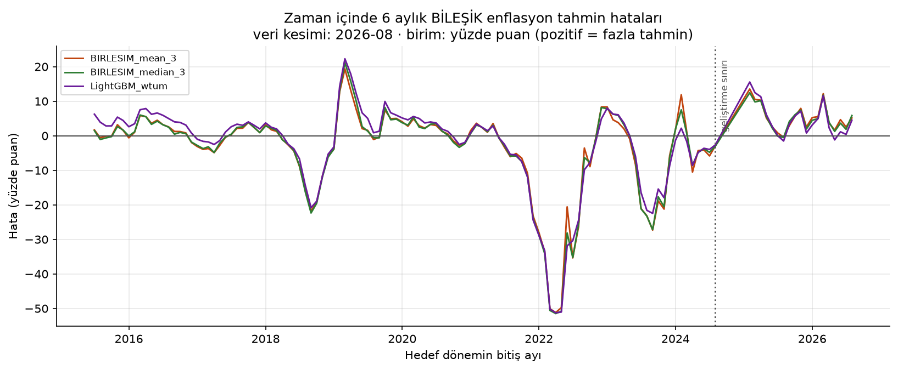
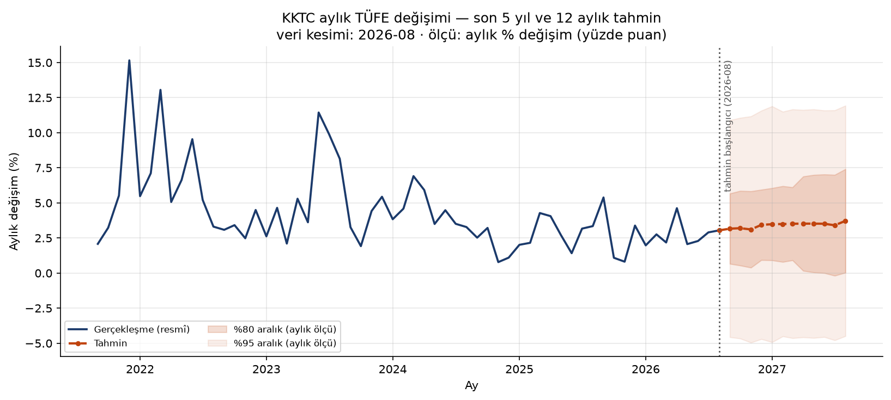
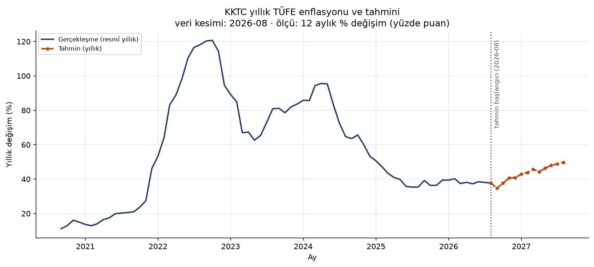
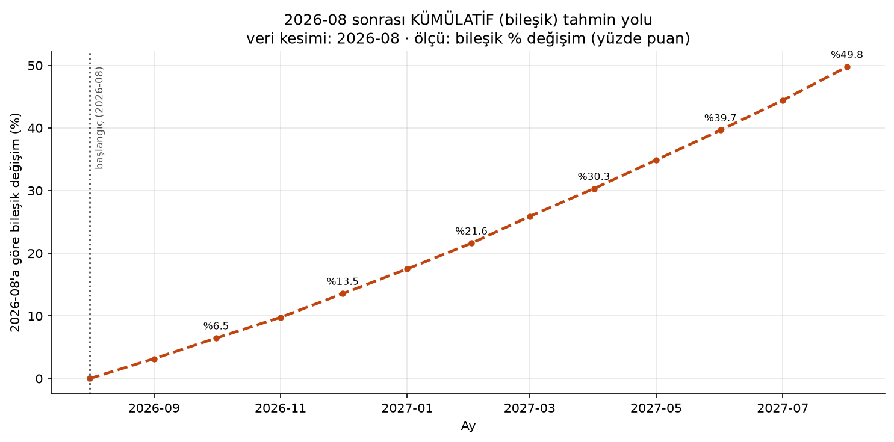
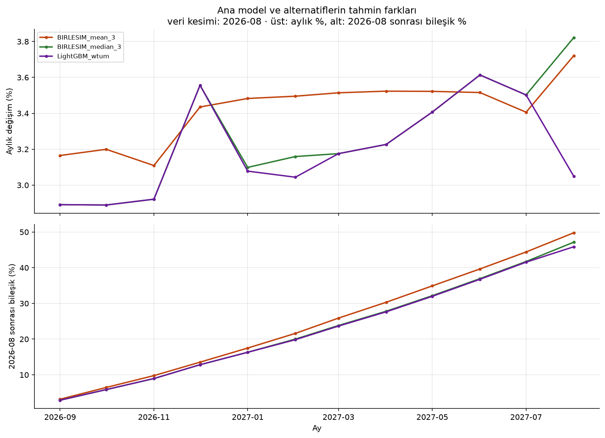

Veri kesimi: 2026-08 · Tahmin dönemi: 2026-09 – 2027-08 · Rapor: 08.09.2026 06:11 UTC
BIRLESIM_mean_3 — aile: ensemble, eğitim penceresi: üye modellerin kendi pencereleri, dönüşüm: log.Veri kesiminden sonraki ana tahminler:
| Ölçü | Dönem | Tahmin (%) | Tanım |
|---|---|---|---|
| 2026 yılsonu enflasyonu (Ara 2026/Ara 2025) | 2026-01 → 2026-12 | 40.81 | Gerçekleşmiş YTD (%24.0081, 2026-08) + 4 aylık tahmin |
| Gelecek 6 ayın BİLEŞİK enflasyonu | 2026-09 → 2027-02 | 21.61 | Başlangıç sonrası 6 ayın bileşiği (yıllık enflasyon DEĞİLDİR) |
| Gelecek 12 ayın BİLEŞİK enflasyonu | 2026-09 → 2027-08 | 49.78 | Başlangıç sonrası 12 ayın bileşiği |
| Temmuz–Aralık 2026 bileşik değişimi (2. dönem) | 2026-07 → 2026-12 | 20.40 | 2 ay gerçekleşme + 4 ay tahmin |
| Ocak–Haziran 2027 bileşik değişimi (1. dönem) | 2027-01 → 2027-06 | 22.99 | Tamamı tahmin (takvim yarıyılı) |
| 2027-02 YILLIK enflasyonu | 2026-03 → 2027-02 | 43.91 | 12 aylık geriye dönük değişim (6 aylık bileşik DEĞİLDİR) |
timesfm 3.0.1 (kod içe aktarma: başarılı), ağırlık: google/timesfm-3.0-pytorch.timesfm-non-commercial-license-v1.0 (ticari/üretim kullanımı yasak); kod lisansı: Apache-2.0.https://kktc-tufe-api.stevevaius.workers.dev bu ortamın çıkış politikasınca engellidir — HTTP 403). Kullanılan kaynak, API’nin kendi beslendiği https://github.com/RYucel/kktc_tufe deposudur; içerik, plan aşamasında doğrulanan başlangıç kontrolleriyle (594 kayıt, 2026-08 aylık %3,0443 / YTD %24,0081 / yıllık %37,6979) birebir uyuşmaktadır.| alan | kapsam | kayit | kaynak |
|---|---|---|---|
| Ana seri | 1977-03 – 2026-08 | 594 | upstream |
| Sepet madde fiyatları | 2015-01 – 2026-08 | 520 kalem × 140 ay | upstream |
Hiçbir kontrol veriyi sessizce düzeltmez. Yuvarlama farkları maddi uyuşmazlıklardan ayrı raporlanır; olağandışı enflasyon ayları silinmez veya kırpılmaz.
| kontrol | durum | ayrinti | deger |
|---|---|---|---|
| Veri kökeni | BİLGİ | API'ye ulaşılamadı; API'nin beslendiği yukarı akış deposu kullanıldı | upstream |
| Kaynak erişimi: openapi | ENGEL | ProxyError: HTTPSConnectionPool(host='kktc-tufe-api.stevevaius.workers.dev', port=443): Max retries exceeded with url: /api/openapi.json (Caused by ProxyError('Unable to connect to proxy', OSError('Tunnel connection failed: 403 Forbidden'))) | https://kktc-tufe-api.stevevaius.workers.dev/api/openapi.json |
| Kaynak erişimi: meta | ENGEL | ProxyError: HTTPSConnectionPool(host='kktc-tufe-api.stevevaius.workers.dev', port=443): Max retries exceeded with url: /api/v1/meta (Caused by ProxyError('Unable to connect to proxy', OSError('Tunnel connection failed: 403 Forbidden'))) | https://kktc-tufe-api.stevevaius.workers.dev/api/v1/meta |
| Kaynak erişimi: tufe[offset=0] | ENGEL | ProxyError: HTTPSConnectionPool(host='kktc-tufe-api.stevevaius.workers.dev', port=443): Max retries exceeded with url: /api/v1/tufe?limit=1000&offset=0&sort=asc (Caused by ProxyError('Unable to connect to proxy', OSError('Tunnel connection failed: 403 Forbidden'))) | https://kktc-tufe-api.stevevaius.workers.dev/api/v1/tufe |
| Aylar tekil mi | GEÇTİ | 0 yinelenen ay | 0 |
| Aylar sıralı mı | GEÇTİ | NaN | NaN |
| Ana seri kesintisiz mi | GEÇTİ | Eksik ay yok | 0 |
| Aylık değişimde eksik/sayısal olmayan | GEÇTİ | 0 kayıt | 0 |
| Aylık değişim > -%100 | GEÇTİ | 0 kayıt log dönüşümü için geçersiz | 0 |
| Yıllık oran tutarlılığı | UYARI | 583 kayıt; 451 tanesi yuvarlama toleransı içinde (<= 0.02 pp); 28 tanesi maddi fark (> 0.25 pp); en büyük fark 3.1371 pp @ 2001-06. Farklar düzeltilmedi, olduğu gibi raporlandı. | 3.1371 |
| YTD oran tutarlılığı | UYARI | 584 kayıt; 518 tanesi yuvarlama toleransı içinde (<= 0.02 pp); 1 tanesi maddi fark (> 0.25 pp); en büyük fark 0.2915 pp @ 2001-12. Farklar düzeltilmedi, olduğu gibi raporlandı. | 0.2915 |
| Kayıt sayısı | GEÇTİ | beklenen 594, bulunan 594 | 594 |
| Seri başlangıcı | GEÇTİ | beklenen 1977-03, bulunan 1977-03 | 1977-03 |
| Seri sonu (kesim) | GEÇTİ | beklenen 2026-08, bulunan 2026-08 | 2026-08 |
| Son ay aylık % | GEÇTİ | beklenen 3.0443, bulunan 3.0443 | 3.0443 |
| Son ay YTD % | GEÇTİ | beklenen 24.0081, bulunan 24.0081 | 24.0081 |
| Son ay yıllık % | GEÇTİ | beklenen 37.6979, bulunan 37.6979 | 37.6979 |
| Sepet kapsamı | BİLGİ | 520 kalem × 140 ay (2015-01–2026-08) | 520x140 |
| Sepet dönem kontrolü | GEÇTİ | beklenen 2015-01–2026-08 / 140 ay | 2015-01–2026-08 / 140 |
| Sepet eksik değer | GEÇTİ | 0 boş hücre (0.000%) | 0 |
| Sepet sıfır değer | UYARI | 4341 sıfır hücre | 4341 |
| Tamamen boş kalem | GEÇTİ | 0 kalem | 0 |
| Sepet iç kesinti (seri ortasında boşluk) | GEÇTİ | 0 kalemde seri ortasında boşluk var | 0 |
| Olağandışı aylar | BİLGİ | Şok ayları tahmin probleminin parçasıdır; silinmedi/kırpılmadı. En yüksek 3 ay: 1994-05: %25.50, 1985-08: %22.18, 1994-03: %22.05 | 25.5045 |
| Veri revizyon geçmişi | BİLGİ | Geçmiş veri sürümleri (vintage) mevcut değil. Değerlendirme 'son veri sürümüyle geriye dönük test' olarak adlandırılmalıdır; revizyon olmadığı varsayılmamaktadır. | yok |
Basitlik sırası (küçük=daha basit): 0 referans, 2 ETS/Theta, 3 UCM, 4 SARIMA, 5 Ridge/ElasticNet, 6 LightGBM, 7 sepet destekli ML, 8 temel model (TimesFM). Bu sıra sonuçlar görülmeden sabitlenmiştir.
| aday | aile | pencere | donusum | basitlik_sirasi | yardimci_veri | min_gecmis_ay | notlar |
|---|---|---|---|---|---|---|---|
| naive_son_ay | baseline | tüm geçmiş | log | 0 | hayır | 13 | {} |
| naive_mevsimsel_12 | baseline | tüm geçmiş | log | 0 | hayır | 24 | {} |
| ortalama_3ay | baseline | tüm geçmiş | log | 0 | hayır | 24 | {} |
| ortalama_6ay | baseline | tüm geçmiş | log | 0 | hayır | 24 | {} |
| ortalama_12ay | baseline | tüm geçmiş | log | 0 | hayır | 24 | {} |
| ETS_damped_seasonal_w60 | ets | son 60 ay | log | 2 | hayır | 48 | {} |
| AutoTheta_w60 | theta | son 60 ay | log | 2 | hayır | 48 | {} |
| ETS_damped_seasonal_w120 | ets | son 120 ay | log | 2 | hayır | 48 | {} |
| AutoTheta_w120 | theta | son 120 ay | log | 2 | hayır | 48 | {} |
| ETS_damped_seasonal_wtum | ets | tüm geçmiş | log | 2 | hayır | 48 | {} |
| AutoTheta_wtum | theta | tüm geçmiş | log | 2 | hayır | 48 | {} |
| SARIMA_w60 | arima | son 60 ay | log | 4 | hayır | 60 | {} |
| SARIMA_w120 | arima | son 120 ay | log | 4 | hayır | 60 | {} |
| SARIMA_wtum | arima | tüm geçmiş | log | 4 | hayır | 60 | {} |
| UCM_llt_seasonal_w120 | ucm | son 120 ay | log | 3 | hayır | 60 | {} |
| UCM_llt_seasonal_wtum | ucm | tüm geçmiş | log | 3 | hayır | 60 | {} |
| Ridge_w120 | ridge | son 120 ay | log | 5 | hayır | 84 | {} |
| LightGBM_w120 | lgbm | son 120 ay | log | 6 | hayır | 84 | {} |
| Ridge_wtum | ridge | tüm geçmiş | log | 5 | hayır | 84 | {} |
| LightGBM_wtum | lgbm | tüm geçmiş | log | 6 | hayır | 84 | {} |
| ElasticNet_wtum | ridge | tüm geçmiş | log | 5 | hayır | 84 | {} |
| Ridge_sepet_wtum | ridge_aux | tüm geçmiş | log | 7 | evet | 84 | {"aux": "sepet_ozet_ve_faktor", "aux_start": "2015-01"} |
| LightGBM_sepet_wtum | lgbm_aux | tüm geçmiş | log | 7 | evet | 84 | {"aux": "sepet_ozet_ve_faktor", "aux_start": "2015-01"} |
Seçim skoru S = 0.6·MAE_yılsonu + 0.3·MAE_6ay + 0.1·MAE_12ay, tüm adaylar için ORTAK başlangıçlarda hesaplanır. Ağırlıklar sonuçlar görülmeden sabitlenmiştir ve sonradan değiştirilmemiştir.
| model | MAE_yearend | n_yearend | MAE_c6 | n_c6 | MAE_c12 | n_c12 | S | uygun | sira |
|---|---|---|---|---|---|---|---|---|---|
| BIRLESIM_mean_3 | 6.234 | 27 | 7.723 | 110 | 17.936 | 104 | 7.851 | True | 1 |
| BIRLESIM_median_3 | 6.234 | 27 | 7.858 | 110 | 18.046 | 104 | 7.902 | True | 2 |
| LightGBM_wtum | 6.073 | 27 | 8.216 | 110 | 19.038 | 104 | 8.012 | True | 3 |
| Ridge_wtum | 6.747 | 27 | 8.037 | 110 | 17.303 | 104 | 8.190 | True | 4 |
| ElasticNet_wtum | 6.871 | 27 | 8.037 | 110 | 17.321 | 104 | 8.266 | True | 5 |
| SARIMA_w60 | 6.821 | 27 | 8.476 | 110 | 21.138 | 104 | 8.749 | True | 6 |
| Ridge_sepet_wtum | 6.795 | 27 | 8.839 | 110 | 21.403 | 104 | 8.869 | True | 7 |
| SARIMA_wtum | 7.547 | 27 | 8.370 | 110 | 18.610 | 104 | 8.901 | True | 8 |
| Ridge_w120 | 7.344 | 27 | 9.334 | 110 | 22.370 | 104 | 9.443 | True | 9 |
| ETS_damped_seasonal_wtum | 8.316 | 27 | 8.712 | 110 | 19.918 | 104 | 9.595 | True | 10 |
| AutoTheta_wtum | 8.559 | 27 | 8.938 | 110 | 20.835 | 104 | 9.901 | True | 11 |
| ortalama_12ay | 8.607 | 27 | 8.973 | 110 | 20.619 | 104 | 9.918 | True | 12 |
| UCM_llt_seasonal_wtum | 8.736 | 27 | 8.928 | 110 | 20.883 | 104 | 10.008 | True | 13 |
| SARIMA_w120 | 8.101 | 27 | 9.728 | 110 | 23.253 | 104 | 10.104 | True | 14 |
| LightGBM_sepet_wtum | 7.747 | 27 | 10.894 | 110 | 24.933 | 104 | 10.410 | True | 15 |
| LightGBM_w120 | 8.129 | 27 | 10.740 | 110 | 25.238 | 104 | 10.623 | True | 16 |
| naive_mevsimsel_12 | 8.834 | 27 | 10.936 | 110 | 20.619 | 104 | 10.643 | True | 17 |
| ortalama_6ay | 9.561 | 27 | 10.272 | 110 | 24.191 | 104 | 11.237 | True | 18 |
| AutoTheta_w120 | 10.330 | 27 | 9.947 | 110 | 28.117 | 104 | 11.993 | True | 19 |
| ortalama_3ay | 10.085 | 27 | 10.627 | 110 | 29.240 | 104 | 12.163 | True | 20 |
| ETS_damped_seasonal_w120 | 10.373 | 27 | 10.239 | 110 | 30.195 | 104 | 12.315 | True | 21 |
| UCM_llt_seasonal_w120 | 10.358 | 27 | 10.429 | 110 | 31.247 | 104 | 12.468 | True | 22 |
| AutoTheta_w60 | 10.414 | 27 | 10.633 | 110 | 30.439 | 104 | 12.482 | True | 23 |
| ETS_damped_seasonal_w60 | 10.274 | 27 | 10.986 | 110 | 32.299 | 104 | 12.690 | True | 24 |
| naive_son_ay | 12.533 | 27 | 11.888 | 110 | 34.228 | 104 | 14.509 | True | 25 |
Okunabilirlik için ana hedefler ve seçilmiş aylık ufuklar gösterilmiştir; tüm hedefler (m1–m12, yoy1–yoy12) ilgili CSV dosyasındadır.
| model | hedef | n | MAE | RMSE | ME | MAPE | en_kotu_hata | en_kotu_donem | MASE | MASE_payda_n |
|---|---|---|---|---|---|---|---|---|---|---|
| Ridge_wtum | c12 | 104 | 17.303 | 28.555 | -8.319 | 54.453 | 95.285 | 2022-09 | 2.229 | 40 |
| ElasticNet_wtum | c12 | 104 | 17.321 | 28.764 | -8.460 | 56.263 | 95.272 | 2022-09 | 2.239 | 40 |
| BIRLESIM_mean_3 | c12 | 104 | 17.936 | 30.023 | -12.372 | 50.112 | 98.561 | 2022-09 | 2.257 | 40 |
| BIRLESIM_median_3 | c12 | 104 | 18.046 | 30.315 | -12.443 | 51.618 | 99.984 | 2022-09 | 2.307 | 40 |
| SARIMA_wtum | c12 | 104 | 18.610 | 29.642 | -7.743 | 59.690 | 93.285 | 2022-09 | 2.370 | 40 |
| LightGBM_wtum | c12 | 104 | 19.038 | 30.492 | -9.918 | 67.708 | 99.578 | 2022-09 | 2.402 | 40 |
| ETS_damped_seasonal_wtum | c12 | 104 | 19.918 | 31.672 | -9.311 | 56.966 | 98.899 | 2022-09 | 2.531 | 40 |
| ortalama_12ay | c12 | 104 | 20.619 | 31.739 | -9.176 | 62.642 | 99.311 | 2022-09 | 2.634 | 40 |
| naive_mevsimsel_12 | c12 | 104 | 20.619 | 31.739 | -9.176 | 62.642 | 99.311 | 2022-09 | 2.634 | 40 |
| AutoTheta_wtum | c12 | 104 | 20.835 | 32.630 | -8.548 | 61.779 | 97.500 | 2022-09 | 2.610 | 40 |
| UCM_llt_seasonal_wtum | c12 | 104 | 20.883 | 32.637 | -8.954 | 60.972 | 98.938 | 2022-09 | 2.630 | 40 |
| SARIMA_w60 | c12 | 104 | 21.138 | 33.623 | -18.269 | 46.324 | 100.752 | 2022-09 | 2.583 | 40 |
| Ridge_sepet_wtum | c12 | 104 | 21.403 | 34.480 | -15.998 | 57.132 | 102.190 | 2022-10 | 2.638 | 40 |
| Ridge_w120 | c12 | 104 | 22.370 | 35.293 | -20.454 | 52.330 | 104.097 | 2022-10 | 2.852 | 40 |
| SARIMA_w120 | c12 | 104 | 23.253 | 36.920 | -20.986 | 47.024 | 106.403 | 2022-09 | 2.808 | 40 |
| ortalama_6ay | c12 | 104 | 24.191 | 37.010 | -6.045 | 74.938 | 108.951 | 2023-05 | 3.006 | 40 |
| LightGBM_sepet_wtum | c12 | 104 | 24.933 | 38.053 | -19.883 | 60.005 | 103.794 | 2022-10 | 2.775 | 40 |
| LightGBM_w120 | c12 | 104 | 25.238 | 38.936 | -24.602 | 48.897 | 105.969 | 2022-10 | 2.978 | 40 |
| AutoTheta_w120 | c12 | 104 | 28.117 | 48.424 | -1.122 | 77.163 | 281.789 | 2022-12 | 3.402 | 40 |
| ortalama_3ay | c12 | 104 | 29.240 | 42.272 | -2.751 | 97.410 | 143.014 | 2024-08 | 3.550 | 40 |
| ETS_damped_seasonal_w120 | c12 | 104 | 30.195 | 54.632 | -1.117 | 80.741 | 360.393 | 2022-12 | 3.741 | 40 |
| AutoTheta_w60 | c12 | 104 | 30.439 | 54.616 | 1.176 | 89.344 | 354.267 | 2022-12 | 3.725 | 40 |
| UCM_llt_seasonal_w120 | c12 | 104 | 31.247 | 58.179 | 1.690 | 87.222 | 372.622 | 2022-12 | 3.799 | 40 |
| ETS_damped_seasonal_w60 | c12 | 104 | 32.299 | 58.592 | 2.295 | 93.951 | 380.850 | 2022-12 | 4.047 | 40 |
| naive_son_ay | c12 | 104 | 34.228 | 61.879 | 2.025 | 115.616 | 349.239 | 2022-12 | 4.104 | 40 |
| BIRLESIM_mean_3 | c6 | 110 | 7.723 | 12.983 | -3.966 | 170.877 | 51.176 | 2022-04 | 1.578 | 49 |
| BIRLESIM_median_3 | c6 | 110 | 7.858 | 13.244 | -4.007 | 182.728 | 51.473 | 2022-04 | 1.613 | 49 |
| Ridge_wtum | c6 | 110 | 8.037 | 13.069 | -2.654 | 184.809 | 50.285 | 2022-04 | 1.619 | 49 |
| ElasticNet_wtum | c6 | 110 | 8.037 | 12.939 | -2.623 | 182.861 | 50.147 | 2022-04 | 1.631 | 49 |
| LightGBM_wtum | c6 | 110 | 8.216 | 13.094 | -2.942 | 206.025 | 51.245 | 2022-04 | 1.639 | 49 |
| SARIMA_wtum | c6 | 110 | 8.370 | 13.012 | -2.380 | 196.132 | 49.474 | 2022-04 | 1.676 | 49 |
| SARIMA_w60 | c6 | 110 | 8.476 | 14.034 | -6.163 | 139.405 | 51.992 | 2022-04 | 1.737 | 49 |
| ETS_damped_seasonal_wtum | c6 | 110 | 8.712 | 13.787 | -2.988 | 181.550 | 52.300 | 2022-04 | 1.764 | 49 |
| Ridge_sepet_wtum | c6 | 110 | 8.839 | 15.122 | -5.829 | 175.823 | 55.956 | 2022-05 | 1.751 | 49 |
| UCM_llt_seasonal_wtum | c6 | 110 | 8.928 | 13.911 | -2.886 | 185.211 | 51.676 | 2022-04 | 1.805 | 49 |
| AutoTheta_wtum | c6 | 110 | 8.938 | 13.833 | -2.714 | 204.092 | 51.306 | 2022-04 | 1.792 | 49 |
| ortalama_12ay | c6 | 110 | 8.973 | 14.183 | -2.961 | 160.975 | 51.926 | 2022-05 | 1.829 | 49 |
| Ridge_w120 | c6 | 110 | 9.334 | 15.427 | -7.546 | 131.376 | 56.273 | 2022-05 | 1.945 | 49 |
| SARIMA_w120 | c6 | 110 | 9.728 | 15.576 | -7.623 | 111.413 | 54.640 | 2022-04 | 1.899 | 49 |
| AutoTheta_w120 | c6 | 110 | 9.947 | 15.842 | -0.769 | 272.574 | 61.121 | 2022-06 | 1.968 | 49 |
| ETS_damped_seasonal_w120 | c6 | 110 | 10.239 | 16.948 | -1.103 | 263.686 | 77.185 | 2022-06 | 2.074 | 49 |
| ortalama_6ay | c6 | 110 | 10.272 | 14.966 | -1.744 | 246.231 | 47.293 | 2022-04 | 2.005 | 49 |
| UCM_llt_seasonal_w120 | c6 | 110 | 10.429 | 17.197 | -0.324 | 294.228 | 77.429 | 2022-06 | 2.079 | 49 |
| ortalama_3ay | c6 | 110 | 10.627 | 15.420 | -1.156 | 317.161 | 49.575 | 2024-02 | 2.042 | 49 |
| AutoTheta_w60 | c6 | 110 | 10.633 | 16.884 | -0.209 | 312.767 | 76.881 | 2022-06 | 2.086 | 49 |
| LightGBM_w120 | c6 | 110 | 10.740 | 17.244 | -10.045 | 84.381 | 57.494 | 2022-05 | 2.064 | 49 |
| LightGBM_sepet_wtum | c6 | 110 | 10.894 | 17.006 | -8.080 | 120.674 | 56.440 | 2022-05 | 1.934 | 49 |
| naive_mevsimsel_12 | c6 | 110 | 10.936 | 16.990 | -3.762 | 107.199 | 58.835 | 2022-05 | 2.165 | 49 |
| ETS_damped_seasonal_w60 | c6 | 110 | 10.986 | 17.834 | 0.158 | 315.789 | 79.647 | 2022-06 | 2.229 | 49 |
| naive_son_ay | c6 | 110 | 11.888 | 19.092 | -0.350 | 361.292 | 76.427 | 2022-06 | 2.243 | 49 |
| BIRLESIM_mean_3 | m1 | 115 | 1.418 | 2.223 | -0.253 | 149.087 | 12.255 | 2021-12 | 0.891 | 57 |
| BIRLESIM_median_3 | m1 | 115 | 1.428 | 2.254 | -0.279 | 154.604 | 12.600 | 2021-12 | 0.897 | 57 |
| ElasticNet_wtum | m1 | 115 | 1.434 | 2.218 | -0.143 | 154.132 | 12.217 | 2021-12 | 0.902 | 57 |
| SARIMA_wtum | m1 | 115 | 1.437 | 2.260 | -0.189 | 155.217 | 12.557 | 2021-12 | 0.899 | 57 |
| SARIMA_w60 | m1 | 115 | 1.457 | 2.311 | -0.423 | 120.580 | 11.529 | 2021-12 | 0.904 | 57 |
| LightGBM_wtum | m1 | 115 | 1.462 | 2.315 | -0.187 | 161.867 | 12.634 | 2021-12 | 0.925 | 57 |
| ortalama_3ay | m1 | 115 | 1.498 | 2.271 | -0.084 | 138.244 | 11.553 | 2021-12 | 0.918 | 57 |
| Ridge_sepet_wtum | m1 | 115 | 1.500 | 2.407 | -0.475 | 135.144 | 12.577 | 2021-12 | 0.953 | 57 |
| SARIMA_w120 | m1 | 115 | 1.500 | 2.341 | -0.602 | 111.922 | 11.814 | 2021-12 | 0.937 | 57 |
| Ridge_wtum | m1 | 115 | 1.513 | 2.295 | -0.142 | 177.405 | 12.600 | 2021-12 | 0.955 | 57 |
| Ridge_w120 | m1 | 115 | 1.520 | 2.387 | -0.622 | 106.026 | 12.799 | 2021-12 | 0.982 | 57 |
| AutoTheta_w120 | m1 | 115 | 1.533 | 2.348 | -0.051 | 148.446 | 11.334 | 2021-12 | 0.958 | 57 |
| AutoTheta_w60 | m1 | 115 | 1.535 | 2.365 | -0.012 | 117.681 | 10.379 | 2021-12 | 0.955 | 57 |
| ortalama_6ay | m1 | 115 | 1.565 | 2.356 | -0.144 | 158.482 | 12.038 | 2021-12 | 0.971 | 57 |
| UCM_llt_seasonal_w120 | m1 | 115 | 1.576 | 2.414 | -0.032 | 120.189 | 10.746 | 2021-12 | 1.012 | 57 |
| ETS_damped_seasonal_w120 | m1 | 115 | 1.590 | 2.434 | -0.122 | 121.625 | 10.912 | 2021-12 | 1.026 | 57 |
| naive_son_ay | m1 | 115 | 1.602 | 2.409 | -0.036 | 121.177 | 9.674 | 2022-01 | 0.992 | 57 |
| UCM_llt_seasonal_wtum | m1 | 115 | 1.614 | 2.392 | -0.268 | 164.478 | 13.085 | 2021-12 | 1.027 | 57 |
| ortalama_12ay | m1 | 115 | 1.626 | 2.467 | -0.263 | 147.246 | 13.117 | 2021-12 | 1.011 | 57 |
| AutoTheta_wtum | m1 | 115 | 1.655 | 2.430 | -0.236 | 184.451 | 13.271 | 2021-12 | 1.045 | 57 |
| ETS_damped_seasonal_wtum | m1 | 115 | 1.670 | 2.466 | -0.275 | 187.406 | 13.642 | 2021-12 | 1.060 | 57 |
| ETS_damped_seasonal_w60 | m1 | 115 | 1.672 | 2.493 | 0.023 | 140.459 | 10.420 | 2021-12 | 1.071 | 57 |
| LightGBM_w120 | m1 | 115 | 1.777 | 2.907 | -1.349 | 121.201 | 13.961 | 2021-12 | 1.100 | 57 |
| LightGBM_sepet_wtum | m1 | 115 | 1.778 | 2.880 | -1.060 | 148.937 | 13.811 | 2021-12 | 1.100 | 57 |
| naive_mevsimsel_12 | m1 | 115 | 2.258 | 3.447 | -0.415 | 187.569 | 14.743 | 2021-12 | 1.403 | 57 |
| ElasticNet_wtum | m12 | 104 | 1.710 | 2.738 | -0.661 | 185.221 | 13.646 | 2021-12 | 1.283 | 40 |
| SARIMA_wtum | m12 | 104 | 1.712 | 2.750 | -0.548 | 187.887 | 13.473 | 2021-12 | 1.304 | 40 |
| BIRLESIM_mean_3 | m12 | 104 | 1.718 | 2.847 | -0.921 | 170.190 | 13.924 | 2021-12 | 1.296 | 40 |
| Ridge_wtum | m12 | 104 | 1.732 | 2.759 | -0.632 | 205.848 | 14.055 | 2021-12 | 1.292 | 40 |
| BIRLESIM_median_3 | m12 | 104 | 1.758 | 2.884 | -0.906 | 170.104 | 13.890 | 2021-12 | 1.319 | 40 |
| ortalama_12ay | m12 | 104 | 1.811 | 2.857 | -0.767 | 148.857 | 13.982 | 2021-12 | 1.373 | 40 |
| LightGBM_wtum | m12 | 104 | 1.811 | 2.905 | -0.734 | 185.843 | 13.827 | 2021-12 | 1.369 | 40 |
| SARIMA_w60 | m12 | 104 | 1.844 | 3.013 | -1.393 | 133.719 | 13.890 | 2021-12 | 1.373 | 40 |
| UCM_llt_seasonal_wtum | m12 | 104 | 1.856 | 2.931 | -0.767 | 152.088 | 14.271 | 2021-12 | 1.370 | 40 |
| ortalama_6ay | m12 | 104 | 1.858 | 2.942 | -0.634 | 133.940 | 13.523 | 2021-12 | 1.401 | 40 |
| ETS_damped_seasonal_wtum | m12 | 104 | 1.887 | 2.941 | -0.752 | 185.471 | 14.623 | 2021-12 | 1.399 | 40 |
| AutoTheta_wtum | m12 | 104 | 1.916 | 2.980 | -0.753 | 175.646 | 14.591 | 2021-12 | 1.421 | 40 |
| LightGBM_sepet_wtum | m12 | 104 | 1.941 | 3.088 | -1.265 | 163.649 | 13.889 | 2021-12 | 1.412 | 40 |
| SARIMA_w120 | m12 | 104 | 1.956 | 3.095 | -1.616 | 120.823 | 14.199 | 2021-12 | 1.455 | 40 |
| LightGBM_w120 | m12 | 104 | 1.970 | 3.168 | -1.639 | 125.431 | 14.088 | 2021-12 | 1.453 | 40 |
| AutoTheta_w120 | m12 | 104 | 2.063 | 3.199 | -0.435 | 166.104 | 13.864 | 2021-12 | 1.537 | 40 |
| Ridge_sepet_wtum | m12 | 104 | 2.091 | 3.144 | -1.116 | 184.088 | 13.920 | 2021-12 | 1.539 | 40 |
| ETS_damped_seasonal_w120 | m12 | 104 | 2.151 | 3.364 | -0.468 | 148.639 | 14.021 | 2021-12 | 1.573 | 40 |
| ortalama_3ay | m12 | 104 | 2.169 | 3.211 | -0.517 | 183.844 | 13.869 | 2021-12 | 1.617 | 40 |
| Ridge_w120 | m12 | 104 | 2.171 | 3.267 | -1.311 | 158.776 | 14.118 | 2021-12 | 1.623 | 40 |
| AutoTheta_w60 | m12 | 104 | 2.179 | 3.378 | -0.331 | 172.666 | 14.153 | 2021-12 | 1.628 | 40 |
| UCM_llt_seasonal_w120 | m12 | 104 | 2.228 | 3.508 | -0.286 | 168.866 | 13.991 | 2021-12 | 1.623 | 40 |
| ETS_damped_seasonal_w60 | m12 | 104 | 2.263 | 3.500 | -0.252 | 177.354 | 14.149 | 2021-12 | 1.667 | 40 |
| naive_mevsimsel_12 | m12 | 104 | 2.350 | 3.578 | -0.418 | 197.574 | 14.743 | 2021-12 | 1.705 | 40 |
| naive_son_ay | m12 | 104 | 2.350 | 3.578 | -0.418 | 197.574 | 14.743 | 2021-12 | 1.705 | 40 |
| LightGBM_wtum | m3 | 113 | 1.530 | 2.473 | -0.331 | 174.086 | 13.435 | 2021-12 | 1.048 | 54 |
| SARIMA_w60 | m3 | 113 | 1.543 | 2.495 | -0.845 | 137.422 | 13.633 | 2021-12 | 1.044 | 54 |
| BIRLESIM_mean_3 | m3 | 113 | 1.550 | 2.478 | -0.488 | 170.234 | 13.711 | 2021-12 | 1.051 | 54 |
| SARIMA_wtum | m3 | 113 | 1.577 | 2.491 | -0.266 | 177.227 | 13.192 | 2021-12 | 1.062 | 54 |
| BIRLESIM_median_3 | m3 | 113 | 1.581 | 2.534 | -0.509 | 169.940 | 13.633 | 2021-12 | 1.078 | 54 |
| ElasticNet_wtum | m3 | 113 | 1.641 | 2.587 | -0.318 | 198.436 | 13.586 | 2021-12 | 1.104 | 54 |
| AutoTheta_w120 | m3 | 113 | 1.677 | 2.584 | -0.114 | 174.221 | 12.979 | 2021-12 | 1.112 | 54 |
| SARIMA_w120 | m3 | 113 | 1.726 | 2.715 | -1.075 | 124.374 | 14.031 | 2021-12 | 1.149 | 54 |
| ortalama_12ay | m3 | 113 | 1.728 | 2.637 | -0.351 | 157.674 | 13.553 | 2021-12 | 1.153 | 54 |
| Ridge_wtum | m3 | 113 | 1.752 | 2.666 | -0.282 | 211.058 | 14.063 | 2021-12 | 1.181 | 54 |
| ortalama_6ay | m3 | 113 | 1.758 | 2.655 | -0.228 | 182.932 | 12.898 | 2021-12 | 1.169 | 54 |
| AutoTheta_w60 | m3 | 113 | 1.771 | 2.660 | -0.058 | 177.619 | 12.944 | 2021-12 | 1.175 | 54 |
| Ridge_w120 | m3 | 113 | 1.771 | 2.884 | -1.084 | 125.279 | 14.059 | 2021-12 | 1.215 | 54 |
| UCM_llt_seasonal_wtum | m3 | 113 | 1.771 | 2.640 | -0.358 | 180.999 | 13.868 | 2021-12 | 1.206 | 54 |
| ETS_damped_seasonal_w120 | m3 | 113 | 1.795 | 2.696 | -0.170 | 160.365 | 13.696 | 2021-12 | 1.221 | 54 |
| Ridge_sepet_wtum | m3 | 113 | 1.799 | 2.905 | -0.735 | 160.593 | 13.967 | 2021-12 | 1.219 | 54 |
| LightGBM_w120 | m3 | 113 | 1.806 | 2.960 | -1.408 | 122.440 | 14.027 | 2021-12 | 1.199 | 54 |
| LightGBM_sepet_wtum | m3 | 113 | 1.810 | 2.935 | -1.119 | 151.917 | 13.896 | 2021-12 | 1.198 | 54 |
| ETS_damped_seasonal_wtum | m3 | 113 | 1.820 | 2.683 | -0.370 | 204.781 | 14.315 | 2021-12 | 1.234 | 54 |
| UCM_llt_seasonal_w120 | m3 | 113 | 1.825 | 2.713 | -0.065 | 171.798 | 13.763 | 2021-12 | 1.233 | 54 |
| AutoTheta_wtum | m3 | 113 | 1.827 | 2.682 | -0.338 | 209.513 | 14.191 | 2021-12 | 1.236 | 54 |
| ortalama_3ay | m3 | 113 | 1.886 | 2.735 | -0.156 | 191.370 | 12.871 | 2021-12 | 1.235 | 54 |
| naive_son_ay | m3 | 113 | 1.907 | 2.877 | -0.103 | 217.179 | 13.074 | 2021-12 | 1.207 | 54 |
| ETS_damped_seasonal_w60 | m3 | 113 | 1.954 | 2.842 | -0.006 | 222.187 | 14.489 | 2021-12 | 1.325 | 54 |
| naive_mevsimsel_12 | m3 | 113 | 2.256 | 3.459 | -0.443 | 187.820 | 14.743 | 2021-12 | 1.511 | 54 |
| BIRLESIM_mean_3 | m6 | 110 | 1.614 | 2.667 | -0.651 | 174.192 | 13.803 | 2021-12 | 1.161 | 49 |
| SARIMA_w60 | m6 | 110 | 1.633 | 2.757 | -1.102 | 131.929 | 13.735 | 2021-12 | 1.175 | 49 |
| BIRLESIM_median_3 | m6 | 110 | 1.648 | 2.711 | -0.652 | 175.470 | 13.779 | 2021-12 | 1.181 | 49 |
| LightGBM_wtum | m6 | 110 | 1.669 | 2.715 | -0.441 | 185.672 | 13.779 | 2021-12 | 1.176 | 49 |
| SARIMA_wtum | m6 | 110 | 1.673 | 2.660 | -0.359 | 181.913 | 13.393 | 2021-12 | 1.190 | 49 |
| ElasticNet_wtum | m6 | 110 | 1.683 | 2.657 | -0.429 | 202.560 | 13.678 | 2021-12 | 1.205 | 49 |
| Ridge_sepet_wtum | m6 | 110 | 1.711 | 2.864 | -0.975 | 148.137 | 13.966 | 2021-12 | 1.214 | 49 |
| Ridge_wtum | m6 | 110 | 1.755 | 2.710 | -0.407 | 217.211 | 13.894 | 2021-12 | 1.255 | 49 |
| ortalama_12ay | m6 | 110 | 1.766 | 2.729 | -0.484 | 140.794 | 13.629 | 2021-12 | 1.256 | 49 |
| Ridge_w120 | m6 | 110 | 1.815 | 2.975 | -1.327 | 124.386 | 14.090 | 2021-12 | 1.318 | 49 |
| SARIMA_w120 | m6 | 110 | 1.843 | 3.016 | -1.350 | 120.186 | 14.133 | 2021-12 | 1.299 | 49 |
| UCM_llt_seasonal_wtum | m6 | 110 | 1.848 | 2.815 | -0.472 | 171.066 | 13.963 | 2021-12 | 1.322 | 49 |
| LightGBM_sepet_wtum | m6 | 110 | 1.862 | 2.995 | -1.130 | 158.563 | 13.897 | 2021-12 | 1.272 | 49 |
| LightGBM_w120 | m6 | 110 | 1.865 | 3.037 | -1.473 | 123.303 | 14.065 | 2021-12 | 1.313 | 49 |
| ortalama_6ay | m6 | 110 | 1.894 | 2.918 | -0.335 | 161.668 | 13.735 | 2021-12 | 1.342 | 49 |
| AutoTheta_w120 | m6 | 110 | 1.906 | 2.940 | -0.215 | 173.926 | 13.726 | 2021-12 | 1.346 | 49 |
| ETS_damped_seasonal_wtum | m6 | 110 | 1.909 | 2.851 | -0.473 | 196.679 | 14.455 | 2021-12 | 1.356 | 49 |
| AutoTheta_wtum | m6 | 110 | 1.928 | 2.872 | -0.453 | 197.487 | 14.318 | 2021-12 | 1.373 | 49 |
| ETS_damped_seasonal_w120 | m6 | 110 | 1.953 | 3.009 | -0.267 | 154.019 | 13.180 | 2021-12 | 1.390 | 49 |
| AutoTheta_w60 | m6 | 110 | 2.016 | 3.039 | -0.139 | 218.585 | 13.907 | 2021-12 | 1.425 | 49 |
| UCM_llt_seasonal_w120 | m6 | 110 | 2.017 | 3.080 | -0.136 | 171.371 | 13.048 | 2021-12 | 1.431 | 49 |
| ortalama_3ay | m6 | 110 | 2.037 | 2.987 | -0.277 | 203.597 | 12.924 | 2021-12 | 1.446 | 49 |
| ETS_damped_seasonal_w60 | m6 | 110 | 2.079 | 3.152 | -0.076 | 164.057 | 13.232 | 2021-12 | 1.495 | 49 |
| naive_son_ay | m6 | 110 | 2.247 | 3.222 | -0.222 | 275.951 | 12.019 | 2021-12 | 1.565 | 49 |
| naive_mevsimsel_12 | m6 | 110 | 2.284 | 3.497 | -0.422 | 190.623 | 14.743 | 2021-12 | 1.587 | 49 |
| LightGBM_wtum | yearend | 27 | 6.073 | 9.171 | -1.045 | 21.043 | 26.529 | 2021-12 | 2.100 | 12 |
| BIRLESIM_median_3 | yearend | 27 | 6.234 | 9.366 | -1.435 | 19.808 | 26.093 | 2021-12 | 2.068 | 12 |
| BIRLESIM_mean_3 | yearend | 27 | 6.234 | 9.412 | -1.310 | 19.667 | 25.263 | 2021-12 | 2.078 | 12 |
| Ridge_wtum | yearend | 27 | 6.747 | 10.030 | -0.651 | 20.850 | 23.608 | 2021-12 | 2.103 | 12 |
| Ridge_sepet_wtum | yearend | 27 | 6.795 | 10.456 | -2.024 | 20.806 | 28.579 | 2021-12 | 2.236 | 12 |
| SARIMA_w60 | yearend | 27 | 6.821 | 10.590 | -2.150 | 21.550 | 28.552 | 2023-12 | 2.139 | 12 |
| ElasticNet_wtum | yearend | 27 | 6.871 | 10.018 | -0.418 | 21.992 | 24.107 | 2021-12 | 2.190 | 12 |
| Ridge_w120 | yearend | 27 | 7.344 | 11.111 | -2.933 | 21.861 | 29.324 | 2021-12 | 2.276 | 12 |
| SARIMA_wtum | yearend | 27 | 7.547 | 11.502 | 0.661 | 23.147 | 31.568 | 2022-12 | 2.393 | 12 |
| LightGBM_sepet_wtum | yearend | 27 | 7.747 | 12.087 | -5.720 | 21.851 | 31.508 | 2023-12 | 2.326 | 12 |
| SARIMA_w120 | yearend | 27 | 8.101 | 13.210 | -1.814 | 22.119 | 41.699 | 2022-12 | 2.388 | 12 |
| LightGBM_w120 | yearend | 27 | 8.129 | 12.363 | -7.186 | 23.392 | 30.980 | 2023-12 | 2.350 | 12 |
| ETS_damped_seasonal_wtum | yearend | 27 | 8.316 | 12.962 | -0.694 | 26.543 | 39.762 | 2022-12 | 2.477 | 12 |
| AutoTheta_wtum | yearend | 27 | 8.559 | 13.665 | -0.112 | 26.889 | 45.147 | 2022-12 | 2.537 | 12 |
| ortalama_12ay | yearend | 27 | 8.607 | 12.745 | -0.257 | 26.407 | 32.881 | 2022-12 | 2.609 | 12 |
| UCM_llt_seasonal_wtum | yearend | 27 | 8.736 | 13.965 | 0.490 | 26.060 | 45.231 | 2022-12 | 2.640 | 12 |
| naive_mevsimsel_12 | yearend | 27 | 8.834 | 12.481 | -1.905 | 29.742 | 26.205 | 2022-12 | 2.650 | 12 |
| ortalama_6ay | yearend | 27 | 9.561 | 15.219 | 1.805 | 26.616 | 51.218 | 2022-12 | 2.853 | 12 |
| ortalama_3ay | yearend | 27 | 10.085 | 15.750 | 3.515 | 30.734 | 46.862 | 2023-12 | 3.016 | 12 |
| ETS_damped_seasonal_w60 | yearend | 27 | 10.274 | 17.505 | 3.240 | 29.312 | 65.491 | 2022-12 | 3.180 | 12 |
| AutoTheta_w120 | yearend | 27 | 10.330 | 16.812 | 2.682 | 28.501 | 57.531 | 2022-12 | 3.076 | 12 |
| UCM_llt_seasonal_w120 | yearend | 27 | 10.358 | 17.312 | 3.044 | 27.781 | 63.935 | 2022-12 | 3.075 | 12 |
| ETS_damped_seasonal_w120 | yearend | 27 | 10.373 | 16.893 | 2.234 | 28.261 | 61.285 | 2022-12 | 3.108 | 12 |
| AutoTheta_w60 | yearend | 27 | 10.414 | 17.312 | 3.510 | 28.687 | 59.632 | 2022-12 | 3.076 | 12 |
| naive_son_ay | yearend | 27 | 12.533 | 23.633 | 5.700 | 31.939 | 76.307 | 2022-12 | 3.561 | 12 |
Bu kesitler yalnızca sonuçların dayanıklılığını açıklamak içindir; sonuçlara bakılarak seçim ağırlıkları değiştirilmemiştir.
| model | MAE_yearend | n_yearend | MAE_c6 | n_c6 | MAE_c12 | n_c12 | S | uygun | sira | alt_donem |
|---|---|---|---|---|---|---|---|---|---|---|
| LightGBM_sepet_wtum | 2.584 | 18 | 4.391 | 66 | 8.041 | 60 | 3.672 | True | 1 | 2015-2020 |
| SARIMA_w120 | 2.908 | 18 | 4.101 | 66 | 7.497 | 60 | 3.725 | True | 2 | 2015-2020 |
| LightGBM_w120 | 2.977 | 18 | 3.970 | 66 | 7.556 | 60 | 3.733 | True | 3 | 2015-2020 |
| BIRLESIM_mean_3 | 2.870 | 18 | 4.211 | 66 | 7.551 | 60 | 3.741 | True | 4 | 2015-2020 |
| BIRLESIM_median_3 | 2.881 | 18 | 4.334 | 66 | 7.796 | 60 | 3.808 | True | 5 | 2015-2020 |
| Ridge_sepet_wtum | 2.948 | 18 | 4.260 | 66 | 8.225 | 60 | 3.869 | True | 6 | 2015-2020 |
| Ridge_wtum | 2.939 | 18 | 4.428 | 66 | 7.838 | 60 | 3.876 | True | 7 | 2015-2020 |
| SARIMA_w60 | 3.187 | 18 | 4.300 | 66 | 7.843 | 60 | 3.987 | True | 8 | 2015-2020 |
| ElasticNet_wtum | 3.185 | 18 | 4.612 | 66 | 8.096 | 60 | 4.104 | True | 9 | 2015-2020 |
| Ridge_w120 | 3.120 | 18 | 4.645 | 66 | 9.196 | 60 | 4.185 | True | 10 | 2015-2020 |
| SARIMA_wtum | 3.290 | 18 | 4.742 | 66 | 8.801 | 60 | 4.277 | True | 11 | 2015-2020 |
| LightGBM_wtum | 3.172 | 18 | 5.277 | 66 | 10.153 | 60 | 4.501 | True | 12 | 2015-2020 |
| ETS_damped_seasonal_wtum | 3.623 | 18 | 4.767 | 66 | 9.092 | 60 | 4.513 | True | 13 | 2015-2020 |
| UCM_llt_seasonal_wtum | 3.642 | 18 | 4.908 | 66 | 9.761 | 60 | 4.634 | True | 14 | 2015-2020 |
| ortalama_12ay | 3.638 | 18 | 5.027 | 66 | 9.891 | 60 | 4.680 | True | 15 | 2015-2020 |
| AutoTheta_wtum | 3.751 | 18 | 5.014 | 66 | 9.716 | 60 | 4.727 | True | 16 | 2015-2020 |
| naive_mevsimsel_12 | 4.033 | 18 | 5.713 | 66 | 9.891 | 60 | 5.123 | True | 17 | 2015-2020 |
| ortalama_6ay | 3.835 | 18 | 5.695 | 66 | 11.499 | 60 | 5.159 | True | 18 | 2015-2020 |
| AutoTheta_w120 | 4.110 | 18 | 5.312 | 66 | 11.162 | 60 | 5.176 | True | 19 | 2015-2020 |
| UCM_llt_seasonal_w120 | 4.206 | 18 | 5.716 | 66 | 12.413 | 60 | 5.480 | True | 20 | 2015-2020 |
| ETS_damped_seasonal_w120 | 4.410 | 18 | 5.566 | 66 | 12.171 | 60 | 5.533 | True | 21 | 2015-2020 |
| AutoTheta_w60 | 4.119 | 18 | 6.026 | 66 | 12.865 | 60 | 5.566 | True | 22 | 2015-2020 |
| ETS_damped_seasonal_w60 | 4.508 | 18 | 6.516 | 66 | 13.631 | 60 | 6.022 | True | 23 | 2015-2020 |
| ortalama_3ay | 4.801 | 18 | 6.636 | 66 | 14.811 | 60 | 6.352 | True | 24 | 2015-2020 |
| naive_son_ay | 5.174 | 18 | 7.531 | 66 | 17.638 | 60 | 7.127 | True | 25 | 2015-2020 |
| LightGBM_wtum | 11.875 | 9 | 12.625 | 44 | 31.154 | 44 | 14.028 | True | 1 | 2021-2024/8 |
| BIRLESIM_mean_3 | 12.961 | 9 | 12.992 | 44 | 32.096 | 44 | 14.884 | True | 2 | 2021-2024/8 |
| BIRLESIM_median_3 | 12.939 | 9 | 13.144 | 44 | 32.024 | 44 | 14.909 | True | 3 | 2021-2024/8 |
| ElasticNet_wtum | 14.244 | 9 | 13.176 | 44 | 29.899 | 44 | 15.489 | True | 4 | 2021-2024/8 |
| Ridge_wtum | 14.364 | 9 | 13.449 | 44 | 30.210 | 44 | 15.674 | True | 5 | 2021-2024/8 |
| SARIMA_w60 | 14.089 | 9 | 14.739 | 44 | 39.269 | 44 | 16.802 | True | 6 | 2021-2024/8 |
| SARIMA_wtum | 16.062 | 9 | 13.813 | 44 | 31.987 | 44 | 16.980 | True | 7 | 2021-2024/8 |
| Ridge_sepet_wtum | 14.487 | 9 | 15.708 | 44 | 39.372 | 44 | 17.342 | True | 8 | 2021-2024/8 |
| Ridge_w120 | 15.793 | 9 | 16.366 | 44 | 40.333 | 44 | 18.419 | True | 9 | 2021-2024/8 |
| ETS_damped_seasonal_wtum | 17.703 | 9 | 14.631 | 44 | 34.682 | 44 | 18.479 | True | 10 | 2021-2024/8 |
| AutoTheta_wtum | 18.175 | 9 | 14.824 | 44 | 35.997 | 44 | 18.952 | True | 11 | 2021-2024/8 |
| ortalama_12ay | 18.544 | 9 | 14.892 | 44 | 35.248 | 44 | 19.119 | True | 12 | 2021-2024/8 |
| UCM_llt_seasonal_wtum | 18.923 | 9 | 14.957 | 44 | 36.051 | 44 | 19.446 | True | 13 | 2021-2024/8 |
| naive_mevsimsel_12 | 18.436 | 9 | 18.771 | 44 | 35.248 | 44 | 20.218 | True | 14 | 2021-2024/8 |
| SARIMA_w120 | 18.485 | 9 | 18.167 | 44 | 44.739 | 44 | 21.015 | True | 15 | 2021-2024/8 |
| LightGBM_sepet_wtum | 18.073 | 9 | 20.649 | 44 | 47.968 | 44 | 21.836 | True | 16 | 2021-2024/8 |
| ortalama_6ay | 21.012 | 9 | 17.139 | 44 | 41.497 | 44 | 21.899 | True | 17 | 2021-2024/8 |
| LightGBM_w120 | 18.432 | 9 | 20.896 | 44 | 49.351 | 44 | 22.263 | True | 18 | 2021-2024/8 |
| ortalama_3ay | 20.654 | 9 | 16.613 | 44 | 48.917 | 44 | 22.268 | True | 19 | 2021-2024/8 |
| AutoTheta_w120 | 22.768 | 9 | 16.900 | 44 | 51.237 | 44 | 23.854 | True | 20 | 2021-2024/8 |
| ETS_damped_seasonal_w120 | 22.301 | 9 | 17.249 | 44 | 54.772 | 44 | 24.032 | True | 21 | 2021-2024/8 |
| ETS_damped_seasonal_w60 | 21.808 | 9 | 17.690 | 44 | 57.756 | 44 | 24.168 | True | 22 | 2021-2024/8 |
| AutoTheta_w60 | 23.003 | 9 | 17.543 | 44 | 54.403 | 44 | 24.505 | True | 23 | 2021-2024/8 |
| UCM_llt_seasonal_w120 | 22.663 | 9 | 17.497 | 44 | 56.928 | 44 | 24.540 | True | 24 | 2021-2024/8 |
| naive_son_ay | 27.250 | 9 | 18.424 | 44 | 56.851 | 44 | 27.562 | True | 25 | 2021-2024/8 |
| asama | model | n_yil | MAE_agustos_aralik | ME |
|---|---|---|---|---|
| geliştirme | BIRLESIM_mean_3 | 9 | 6.450 | 0.544 |
| geliştirme | BIRLESIM_median_3 | 9 | 6.336 | 0.274 |
| geliştirme | LightGBM_wtum | 9 | 5.435 | 0.371 |
| nihai test | BIRLESIM_mean_3 | 2 | 7.674 | 7.674 |
| nihai test | BIRLESIM_median_3 | 2 | 7.047 | 7.047 |
| nihai test | LightGBM_wtum | 2 | 9.096 | 9.096 |

Okunabilirlik için ana hedefler ve seçilmiş aylık ufuklar gösterilmiştir; tüm hedefler (m1–m12, yoy1–yoy12) ilgili CSV dosyasındadır.
| model | hedef | n | MAE | RMSE | ME | MAPE | en_kotu_hata | en_kotu_donem | MASE | MASE_payda_n |
|---|---|---|---|---|---|---|---|---|---|---|
| LightGBM_sepet_wtum | c12 | 13 | 2.099 | 2.478 | -1.983 | 5.419 | 4.589 | 2026-02 | 0.102 | 104 |
| SARIMA_w120 | c12 | 13 | 3.268 | 4.303 | -2.508 | 8.461 | 8.253 | 2025-12 | 0.158 | 104 |
| LightGBM_w120 | c12 | 13 | 5.250 | 5.503 | 5.250 | 13.970 | 7.217 | 2026-08 | 0.255 | 104 |
| SARIMA_wtum | c12 | 13 | 6.232 | 8.520 | 4.545 | 16.749 | 21.316 | 2025-08 | 0.302 | 104 |
| Ridge_w120 | c12 | 13 | 6.308 | 7.811 | 6.308 | 16.991 | 16.807 | 2025-08 | 0.306 | 104 |
| Ridge_sepet_wtum | c12 | 13 | 6.982 | 9.568 | 5.175 | 18.749 | 20.577 | 2025-10 | 0.339 | 104 |
| ElasticNet_wtum | c12 | 13 | 7.860 | 10.157 | 7.851 | 21.186 | 21.279 | 2025-08 | 0.381 | 104 |
| AutoTheta_wtum | c12 | 13 | 8.233 | 11.843 | 6.738 | 22.165 | 29.491 | 2025-08 | 0.399 | 104 |
| UCM_llt_seasonal_wtum | c12 | 13 | 8.666 | 13.070 | 7.968 | 23.458 | 31.962 | 2025-08 | 0.420 | 104 |
| ETS_damped_seasonal_w120 | c12 | 13 | 9.684 | 11.026 | 0.047 | 25.543 | 18.940 | 2025-12 | 0.470 | 104 |
| ortalama_6ay | c12 | 13 | 9.882 | 13.388 | 3.264 | 26.347 | 35.943 | 2025-08 | 0.479 | 104 |
| AutoTheta_w120 | c12 | 13 | 10.090 | 11.262 | 2.050 | 26.657 | 17.889 | 2025-10 | 0.489 | 104 |
| ortalama_3ay | c12 | 13 | 10.271 | 12.714 | -0.482 | 27.000 | 22.664 | 2026-01 | 0.498 | 104 |
| UCM_llt_seasonal_w120 | c12 | 13 | 10.353 | 11.567 | 1.445 | 27.402 | 19.179 | 2025-10 | 0.502 | 104 |
| ETS_damped_seasonal_wtum | c12 | 13 | 10.432 | 14.248 | 10.103 | 28.097 | 33.164 | 2025-08 | 0.506 | 104 |
| AutoTheta_w60 | c12 | 13 | 10.890 | 12.570 | 3.133 | 28.860 | 26.319 | 2025-08 | 0.528 | 104 |
| Ridge_wtum | c12 | 13 | 11.027 | 13.479 | 10.993 | 29.676 | 26.595 | 2025-08 | 0.535 | 104 |
| naive_mevsimsel_12 | c12 | 13 | 12.129 | 15.940 | 10.942 | 32.451 | 29.336 | 2025-08 | 0.588 | 104 |
| ortalama_12ay | c12 | 13 | 12.129 | 15.940 | 10.942 | 32.451 | 29.336 | 2025-08 | 0.588 | 104 |
| ETS_damped_seasonal_w60 | c12 | 13 | 12.893 | 15.864 | 0.270 | 33.961 | 31.632 | 2025-10 | 0.625 | 104 |
| BIRLESIM_median_3 | c12 | 13 | 13.185 | 14.631 | 13.185 | 35.284 | 22.216 | 2025-08 | 0.639 | 104 |
| LightGBM_wtum | c12 | 13 | 13.190 | 15.553 | 12.816 | 35.412 | 28.501 | 2025-08 | 0.640 | 104 |
| BIRLESIM_mean_3 | c12 | 13 | 13.961 | 15.195 | 13.961 | 37.310 | 24.642 | 2025-08 | 0.677 | 104 |
| naive_son_ay | c12 | 13 | 14.701 | 17.024 | -0.649 | 38.809 | 27.933 | 2026-03 | 0.713 | 104 |
| SARIMA_w60 | c12 | 13 | 18.327 | 18.757 | 18.327 | 48.515 | 23.707 | 2026-03 | 0.889 | 104 |
| LightGBM_sepet_wtum | c6 | 19 | 1.994 | 2.481 | -0.819 | 11.792 | 5.537 | 2025-09 | 0.181 | 114 |
| Ridge_sepet_wtum | c6 | 19 | 2.542 | 3.341 | 0.997 | 16.449 | 6.977 | 2025-02 | 0.231 | 114 |
| Ridge_w120 | c6 | 19 | 2.564 | 3.480 | 2.211 | 17.068 | 8.585 | 2025-02 | 0.233 | 114 |
| LightGBM_w120 | c6 | 19 | 2.897 | 3.403 | 2.443 | 18.588 | 7.526 | 2026-03 | 0.263 | 114 |
| SARIMA_w120 | c6 | 19 | 3.080 | 3.790 | -0.454 | 19.008 | 9.844 | 2026-03 | 0.280 | 114 |
| ElasticNet_wtum | c6 | 19 | 3.271 | 4.685 | 2.805 | 21.991 | 12.121 | 2025-02 | 0.297 | 114 |
| SARIMA_wtum | c6 | 19 | 3.640 | 5.070 | 1.810 | 24.049 | 13.615 | 2025-02 | 0.331 | 114 |
| UCM_llt_seasonal_wtum | c6 | 19 | 3.887 | 5.935 | 2.800 | 26.203 | 16.328 | 2025-02 | 0.354 | 114 |
| ortalama_12ay | c6 | 19 | 4.078 | 6.474 | 3.447 | 27.148 | 15.986 | 2025-02 | 0.372 | 114 |
| ETS_damped_seasonal_w120 | c6 | 19 | 4.233 | 5.126 | 0.767 | 26.457 | 11.810 | 2026-03 | 0.384 | 114 |
| Ridge_wtum | c6 | 19 | 4.299 | 5.715 | 3.886 | 28.371 | 13.544 | 2025-02 | 0.391 | 114 |
| AutoTheta_wtum | c6 | 19 | 4.386 | 5.935 | 2.335 | 28.739 | 16.148 | 2025-02 | 0.399 | 114 |
| UCM_llt_seasonal_w120 | c6 | 19 | 4.473 | 5.310 | 1.145 | 27.928 | 12.236 | 2026-03 | 0.406 | 114 |
| ETS_damped_seasonal_wtum | c6 | 19 | 4.599 | 6.511 | 3.458 | 30.611 | 17.486 | 2025-02 | 0.419 | 114 |
| AutoTheta_w120 | c6 | 19 | 4.735 | 5.873 | 0.326 | 29.412 | 15.407 | 2026-03 | 0.430 | 114 |
| ortalama_6ay | c6 | 19 | 4.765 | 6.531 | 1.353 | 30.718 | 18.535 | 2025-02 | 0.434 | 114 |
| LightGBM_wtum | c6 | 19 | 5.049 | 6.746 | 4.763 | 33.325 | 15.561 | 2025-02 | 0.459 | 114 |
| BIRLESIM_median_3 | c6 | 19 | 5.165 | 6.299 | 5.098 | 33.401 | 12.450 | 2025-02 | 0.469 | 114 |
| AutoTheta_w60 | c6 | 19 | 5.356 | 6.569 | 0.643 | 34.050 | 14.488 | 2026-03 | 0.487 | 114 |
| BIRLESIM_mean_3 | c6 | 19 | 5.416 | 6.570 | 5.372 | 35.159 | 13.529 | 2025-02 | 0.492 | 114 |
| ortalama_3ay | c6 | 19 | 5.576 | 6.717 | 0.062 | 34.706 | 13.443 | 2026-03 | 0.507 | 114 |
| ETS_damped_seasonal_w60 | c6 | 19 | 6.687 | 8.318 | 2.011 | 41.879 | 18.056 | 2026-03 | 0.606 | 114 |
| naive_mevsimsel_12 | c6 | 19 | 7.089 | 9.556 | 5.738 | 43.336 | 20.187 | 2025-04 | 0.646 | 114 |
| SARIMA_w60 | c6 | 19 | 7.534 | 8.288 | 7.534 | 47.100 | 16.731 | 2026-03 | 0.684 | 114 |
| naive_son_ay | c6 | 19 | 7.766 | 9.351 | -0.226 | 47.532 | 24.189 | 2026-03 | 0.705 | 114 |
| LightGBM_sepet_wtum | m1 | 24 | 0.939 | 1.180 | -0.105 | 50.555 | 2.854 | 2025-09 | 0.421 | 126 |
| Ridge_sepet_wtum | m1 | 24 | 0.957 | 1.198 | 0.127 | 55.132 | 2.453 | 2025-09 | 0.430 | 126 |
| Ridge_w120 | m1 | 24 | 1.004 | 1.292 | 0.260 | 59.341 | 2.805 | 2025-09 | 0.451 | 126 |
| LightGBM_w120 | m1 | 24 | 1.007 | 1.231 | 0.378 | 62.199 | 2.359 | 2025-09 | 0.452 | 126 |
| UCM_llt_seasonal_wtum | m1 | 24 | 1.051 | 1.345 | 0.367 | 63.772 | 2.966 | 2024-12 | 0.471 | 126 |
| SARIMA_w120 | m1 | 24 | 1.071 | 1.379 | 0.010 | 57.286 | 3.346 | 2025-10 | 0.481 | 126 |
| ElasticNet_wtum | m1 | 24 | 1.098 | 1.318 | 0.358 | 63.342 | 2.513 | 2025-09 | 0.493 | 126 |
| SARIMA_wtum | m1 | 24 | 1.113 | 1.371 | 0.258 | 66.972 | 2.791 | 2024-11 | 0.499 | 126 |
| ortalama_6ay | m1 | 24 | 1.127 | 1.432 | 0.166 | 65.198 | 2.634 | 2024-11 | 0.505 | 126 |
| BIRLESIM_median_3 | m1 | 24 | 1.128 | 1.377 | 0.501 | 68.942 | 2.730 | 2024-11 | 0.507 | 126 |
| BIRLESIM_mean_3 | m1 | 24 | 1.130 | 1.383 | 0.512 | 68.632 | 2.935 | 2025-10 | 0.507 | 126 |
| Ridge_wtum | m1 | 24 | 1.148 | 1.350 | 0.402 | 64.163 | 2.607 | 2025-09 | 0.516 | 126 |
| AutoTheta_w60 | m1 | 24 | 1.157 | 1.427 | 0.079 | 66.120 | 3.011 | 2025-10 | 0.519 | 126 |
| AutoTheta_w120 | m1 | 24 | 1.160 | 1.396 | 0.009 | 63.860 | 3.092 | 2025-10 | 0.521 | 126 |
| ETS_damped_seasonal_w120 | m1 | 24 | 1.184 | 1.437 | 0.105 | 66.312 | 3.051 | 2025-09 | 0.531 | 126 |
| UCM_llt_seasonal_w120 | m1 | 24 | 1.190 | 1.444 | 0.108 | 66.865 | 3.047 | 2025-09 | 0.534 | 126 |
| SARIMA_w60 | m1 | 24 | 1.197 | 1.482 | 0.693 | 73.958 | 3.718 | 2025-10 | 0.539 | 126 |
| LightGBM_wtum | m1 | 24 | 1.208 | 1.461 | 0.442 | 73.202 | 3.026 | 2024-11 | 0.542 | 126 |
| ortalama_12ay | m1 | 24 | 1.215 | 1.505 | 0.431 | 74.326 | 3.513 | 2024-11 | 0.544 | 126 |
| ortalama_3ay | m1 | 24 | 1.221 | 1.503 | 0.052 | 69.635 | 2.871 | 2025-10 | 0.548 | 126 |
| AutoTheta_wtum | m1 | 24 | 1.232 | 1.413 | 0.316 | 65.504 | 2.464 | 2026-04 | 0.553 | 126 |
| naive_son_ay | m1 | 24 | 1.255 | 1.637 | 0.010 | 65.871 | 4.296 | 2025-10 | 0.564 | 126 |
| ETS_damped_seasonal_wtum | m1 | 24 | 1.278 | 1.456 | 0.442 | 69.817 | 2.440 | 2024-11 | 0.573 | 126 |
| naive_mevsimsel_12 | m1 | 24 | 1.489 | 1.920 | 0.774 | 84.955 | 4.340 | 2024-12 | 0.666 | 126 |
| ETS_damped_seasonal_w60 | m1 | 24 | 1.682 | 2.087 | 0.222 | 96.829 | 4.262 | 2025-06 | 0.756 | 126 |
| ETS_damped_seasonal_w120 | m12 | 13 | 0.876 | 1.087 | 0.033 | 42.090 | 2.392 | 2025-09 | 0.373 | 104 |
| Ridge_sepet_wtum | m12 | 13 | 0.881 | 1.139 | 0.278 | 52.504 | 2.180 | 2025-10 | 0.375 | 104 |
| UCM_llt_seasonal_wtum | m12 | 13 | 0.924 | 1.173 | 0.444 | 54.005 | 2.515 | 2025-10 | 0.394 | 104 |
| SARIMA_wtum | m12 | 13 | 0.925 | 1.199 | 0.210 | 54.714 | 2.231 | 2025-10 | 0.394 | 104 |
| AutoTheta_w120 | m12 | 13 | 0.945 | 1.167 | 0.149 | 49.209 | 2.275 | 2025-09 | 0.402 | 104 |
| UCM_llt_seasonal_w120 | m12 | 13 | 0.949 | 1.174 | 0.172 | 48.573 | 2.413 | 2025-09 | 0.404 | 104 |
| LightGBM_sepet_wtum | m12 | 13 | 0.949 | 1.224 | -0.074 | 49.112 | 2.687 | 2025-09 | 0.404 | 104 |
| AutoTheta_w60 | m12 | 13 | 0.964 | 1.217 | 0.249 | 54.953 | 2.609 | 2025-10 | 0.410 | 104 |
| SARIMA_w120 | m12 | 13 | 0.970 | 1.253 | -0.210 | 46.593 | 2.959 | 2025-09 | 0.413 | 104 |
| naive_mevsimsel_12 | m12 | 13 | 0.982 | 1.369 | -0.139 | 41.704 | 2.862 | 2025-09 | 0.418 | 104 |
| naive_son_ay | m12 | 13 | 0.982 | 1.369 | -0.139 | 41.704 | 2.862 | 2025-09 | 0.418 | 104 |
| ortalama_6ay | m12 | 13 | 0.985 | 1.277 | 0.133 | 55.351 | 2.326 | 2025-10 | 0.419 | 104 |
| Ridge_w120 | m12 | 13 | 1.034 | 1.234 | 0.501 | 60.322 | 2.193 | 2025-11 | 0.440 | 104 |
| ETS_damped_seasonal_w60 | m12 | 13 | 1.044 | 1.296 | -0.021 | 51.796 | 2.971 | 2025-09 | 0.444 | 104 |
| LightGBM_w120 | m12 | 13 | 1.050 | 1.288 | 0.395 | 60.642 | 2.307 | 2025-11 | 0.447 | 104 |
| ortalama_3ay | m12 | 13 | 1.079 | 1.243 | -0.100 | 53.705 | 2.283 | 2025-09 | 0.459 | 104 |
| LightGBM_wtum | m12 | 13 | 1.108 | 1.345 | 0.689 | 69.011 | 2.798 | 2025-10 | 0.472 | 104 |
| ElasticNet_wtum | m12 | 13 | 1.152 | 1.360 | 0.517 | 66.163 | 2.476 | 2025-10 | 0.490 | 104 |
| AutoTheta_wtum | m12 | 13 | 1.163 | 1.380 | 0.435 | 62.198 | 2.752 | 2025-10 | 0.495 | 104 |
| ortalama_12ay | m12 | 13 | 1.171 | 1.517 | 0.593 | 76.198 | 3.205 | 2025-10 | 0.499 | 104 |
| BIRLESIM_median_3 | m12 | 13 | 1.241 | 1.427 | 0.835 | 74.334 | 2.818 | 2025-10 | 0.529 | 104 |
| ETS_damped_seasonal_wtum | m12 | 13 | 1.246 | 1.469 | 0.632 | 69.212 | 2.987 | 2025-10 | 0.531 | 104 |
| BIRLESIM_mean_3 | m12 | 13 | 1.303 | 1.487 | 0.900 | 77.311 | 2.824 | 2025-10 | 0.555 | 104 |
| Ridge_wtum | m12 | 13 | 1.378 | 1.559 | 0.842 | 76.298 | 2.855 | 2025-10 | 0.587 | 104 |
| SARIMA_w60 | m12 | 13 | 1.498 | 1.697 | 1.172 | 88.969 | 2.984 | 2025-11 | 0.638 | 104 |
| LightGBM_sepet_wtum | m3 | 22 | 0.992 | 1.221 | -0.073 | 54.275 | 2.853 | 2025-09 | 0.440 | 121 |
| Ridge_sepet_wtum | m3 | 22 | 1.002 | 1.275 | 0.181 | 60.186 | 2.886 | 2025-09 | 0.444 | 121 |
| Ridge_w120 | m3 | 22 | 1.028 | 1.292 | 0.395 | 63.814 | 2.667 | 2025-09 | 0.456 | 121 |
| SARIMA_w120 | m3 | 22 | 1.048 | 1.334 | 0.020 | 59.195 | 3.076 | 2025-09 | 0.465 | 121 |
| LightGBM_w120 | m3 | 22 | 1.068 | 1.282 | 0.421 | 66.807 | 2.364 | 2025-09 | 0.474 | 121 |
| UCM_llt_seasonal_wtum | m3 | 22 | 1.107 | 1.427 | 0.402 | 70.469 | 3.458 | 2024-12 | 0.491 | 121 |
| SARIMA_wtum | m3 | 22 | 1.123 | 1.459 | 0.295 | 71.978 | 3.161 | 2024-11 | 0.498 | 121 |
| ElasticNet_wtum | m3 | 22 | 1.125 | 1.375 | 0.422 | 70.641 | 2.926 | 2024-11 | 0.499 | 121 |
| ETS_damped_seasonal_w120 | m3 | 22 | 1.131 | 1.445 | 0.207 | 56.304 | 3.630 | 2025-09 | 0.501 | 121 |
| UCM_llt_seasonal_w120 | m3 | 22 | 1.165 | 1.463 | 0.264 | 58.297 | 3.568 | 2025-09 | 0.516 | 121 |
| AutoTheta_w120 | m3 | 22 | 1.200 | 1.513 | 0.112 | 67.000 | 3.008 | 2025-09 | 0.532 | 121 |
| ortalama_3ay | m3 | 22 | 1.200 | 1.550 | 0.073 | 68.436 | 2.973 | 2024-11 | 0.532 | 121 |
| ortalama_12ay | m3 | 22 | 1.202 | 1.547 | 0.483 | 77.694 | 3.466 | 2024-11 | 0.533 | 121 |
| ortalama_6ay | m3 | 22 | 1.247 | 1.590 | 0.195 | 79.710 | 3.808 | 2024-11 | 0.553 | 121 |
| AutoTheta_w60 | m3 | 22 | 1.252 | 1.603 | 0.127 | 74.132 | 3.148 | 2024-11 | 0.555 | 121 |
| AutoTheta_wtum | m3 | 22 | 1.259 | 1.477 | 0.333 | 72.053 | 2.746 | 2024-11 | 0.559 | 121 |
| ETS_damped_seasonal_wtum | m3 | 22 | 1.277 | 1.523 | 0.475 | 75.709 | 2.924 | 2024-11 | 0.567 | 121 |
| Ridge_wtum | m3 | 22 | 1.308 | 1.479 | 0.592 | 77.464 | 2.799 | 2024-11 | 0.581 | 121 |
| BIRLESIM_median_3 | m3 | 22 | 1.330 | 1.555 | 0.815 | 84.200 | 2.862 | 2024-11 | 0.591 | 121 |
| LightGBM_wtum | m3 | 22 | 1.343 | 1.700 | 0.748 | 88.463 | 3.600 | 2024-11 | 0.595 | 121 |
| BIRLESIM_mean_3 | m3 | 22 | 1.354 | 1.581 | 0.853 | 87.018 | 3.086 | 2024-11 | 0.602 | 121 |
| naive_mevsimsel_12 | m3 | 22 | 1.531 | 1.980 | 0.869 | 89.508 | 4.340 | 2024-12 | 0.678 | 121 |
| ETS_damped_seasonal_w60 | m3 | 22 | 1.552 | 2.084 | 0.358 | 78.773 | 5.664 | 2025-09 | 0.687 | 121 |
| SARIMA_w60 | m3 | 22 | 1.584 | 1.773 | 1.223 | 100.861 | 3.168 | 2025-11 | 0.705 | 121 |
| naive_son_ay | m3 | 22 | 1.702 | 1.949 | 0.036 | 89.054 | 3.971 | 2025-09 | 0.755 | 121 |
| UCM_llt_seasonal_wtum | m6 | 19 | 0.835 | 1.146 | 0.270 | 44.085 | 2.341 | 2025-09 | 0.368 | 114 |
| Ridge_sepet_wtum | m6 | 19 | 0.855 | 1.095 | 0.028 | 41.937 | 2.615 | 2025-09 | 0.376 | 114 |
| ETS_damped_seasonal_w120 | m6 | 19 | 0.897 | 1.100 | 0.070 | 43.427 | 2.312 | 2026-03 | 0.396 | 114 |
| Ridge_w120 | m6 | 19 | 0.900 | 1.100 | 0.245 | 44.536 | 2.418 | 2025-09 | 0.397 | 114 |
| UCM_llt_seasonal_w120 | m6 | 19 | 0.914 | 1.120 | 0.169 | 45.760 | 2.391 | 2026-03 | 0.404 | 114 |
| LightGBM_sepet_wtum | m6 | 19 | 0.944 | 1.185 | -0.223 | 43.353 | 2.798 | 2025-09 | 0.416 | 114 |
| ortalama_12ay | m6 | 19 | 0.948 | 1.255 | 0.338 | 51.019 | 2.333 | 2025-09 | 0.418 | 114 |
| ElasticNet_wtum | m6 | 19 | 0.963 | 1.179 | 0.293 | 49.701 | 2.332 | 2025-09 | 0.424 | 114 |
| SARIMA_w120 | m6 | 19 | 0.973 | 1.203 | -0.221 | 44.511 | 2.687 | 2025-09 | 0.428 | 114 |
| SARIMA_wtum | m6 | 19 | 0.979 | 1.195 | 0.105 | 50.495 | 2.552 | 2025-09 | 0.431 | 114 |
| LightGBM_w120 | m6 | 19 | 0.989 | 1.204 | 0.248 | 52.515 | 2.354 | 2025-09 | 0.436 | 114 |
| LightGBM_wtum | m6 | 19 | 1.016 | 1.265 | 0.506 | 57.743 | 2.580 | 2025-11 | 0.448 | 114 |
| AutoTheta_w120 | m6 | 19 | 1.049 | 1.313 | -0.014 | 54.409 | 2.576 | 2025-10 | 0.463 | 114 |
| ortalama_6ay | m6 | 19 | 1.061 | 1.307 | 0.037 | 49.867 | 3.136 | 2025-09 | 0.468 | 114 |
| AutoTheta_wtum | m6 | 19 | 1.084 | 1.334 | 0.202 | 52.455 | 2.554 | 2025-02 | 0.478 | 114 |
| BIRLESIM_median_3 | m6 | 19 | 1.101 | 1.305 | 0.640 | 60.975 | 2.580 | 2025-11 | 0.486 | 114 |
| Ridge_wtum | m6 | 19 | 1.121 | 1.305 | 0.554 | 57.979 | 2.364 | 2025-02 | 0.495 | 114 |
| BIRLESIM_mean_3 | m6 | 19 | 1.124 | 1.352 | 0.736 | 63.754 | 2.547 | 2025-11 | 0.497 | 114 |
| AutoTheta_w60 | m6 | 19 | 1.129 | 1.362 | -0.038 | 57.129 | 2.535 | 2025-10 | 0.498 | 114 |
| ETS_damped_seasonal_wtum | m6 | 19 | 1.130 | 1.360 | 0.366 | 55.857 | 2.741 | 2025-02 | 0.498 | 114 |
| ETS_damped_seasonal_w60 | m6 | 19 | 1.133 | 1.572 | 0.162 | 52.880 | 4.025 | 2025-09 | 0.501 | 114 |
| ortalama_3ay | m6 | 19 | 1.178 | 1.433 | -0.155 | 59.617 | 2.867 | 2025-11 | 0.519 | 114 |
| naive_mevsimsel_12 | m6 | 19 | 1.257 | 1.636 | 0.491 | 53.618 | 3.063 | 2025-06 | 0.553 | 114 |
| SARIMA_w60 | m6 | 19 | 1.426 | 1.654 | 1.151 | 81.631 | 3.212 | 2025-11 | 0.631 | 114 |
| naive_son_ay | m6 | 19 | 1.491 | 1.737 | -0.220 | 69.396 | 3.533 | 2026-04 | 0.658 | 114 |
| LightGBM_sepet_wtum | yearend | 5 | 2.620 | 3.068 | 1.390 | 5.487 | 4.890 | 2024-12 | 0.294 | 29 |
| Ridge_w120 | yearend | 5 | 3.396 | 4.626 | 3.056 | 6.729 | 7.953 | 2024-12 | 0.383 | 29 |
| SARIMA_w120 | yearend | 5 | 3.559 | 4.173 | 1.515 | 7.523 | 6.002 | 2024-12 | 0.399 | 29 |
| LightGBM_w120 | yearend | 5 | 3.723 | 4.204 | 3.723 | 7.839 | 6.073 | 2024-12 | 0.418 | 29 |
| Ridge_sepet_wtum | yearend | 5 | 3.723 | 4.509 | 2.606 | 7.662 | 6.745 | 2024-12 | 0.419 | 29 |
| ElasticNet_wtum | yearend | 5 | 4.076 | 5.937 | 4.076 | 7.911 | 10.881 | 2024-12 | 0.460 | 29 |
| Ridge_wtum | yearend | 5 | 4.178 | 5.876 | 4.018 | 8.267 | 11.056 | 2024-12 | 0.471 | 29 |
| AutoTheta_wtum | yearend | 5 | 4.339 | 6.595 | 3.603 | 8.405 | 13.133 | 2024-12 | 0.490 | 29 |
| ortalama_3ay | yearend | 5 | 4.430 | 6.051 | 3.976 | 8.885 | 11.463 | 2024-12 | 0.499 | 29 |
| ETS_damped_seasonal_wtum | yearend | 5 | 4.460 | 7.166 | 4.313 | 8.468 | 14.266 | 2024-12 | 0.504 | 29 |
| AutoTheta_w120 | yearend | 5 | 4.511 | 5.108 | 3.016 | 9.507 | 7.780 | 2024-12 | 0.506 | 29 |
| SARIMA_wtum | yearend | 5 | 5.126 | 6.885 | 4.637 | 10.245 | 12.802 | 2024-12 | 0.578 | 29 |
| BIRLESIM_median_3 | yearend | 5 | 5.322 | 6.471 | 5.322 | 10.945 | 11.157 | 2024-12 | 0.599 | 29 |
| UCM_llt_seasonal_wtum | yearend | 5 | 5.444 | 7.929 | 5.116 | 10.627 | 15.209 | 2024-12 | 0.615 | 29 |
| AutoTheta_w60 | yearend | 5 | 5.452 | 6.769 | 3.885 | 11.229 | 12.433 | 2024-12 | 0.613 | 29 |
| BIRLESIM_mean_3 | yearend | 5 | 5.583 | 6.859 | 5.583 | 11.483 | 12.236 | 2024-12 | 0.628 | 29 |
| UCM_llt_seasonal_w120 | yearend | 5 | 5.747 | 6.304 | 1.090 | 12.610 | 8.575 | 2025-12 | 0.643 | 29 |
| ETS_damped_seasonal_w120 | yearend | 5 | 5.805 | 6.403 | 0.924 | 12.779 | 9.095 | 2025-12 | 0.649 | 29 |
| ortalama_12ay | yearend | 5 | 5.824 | 8.101 | 4.742 | 11.474 | 14.617 | 2024-12 | 0.657 | 29 |
| ortalama_6ay | yearend | 5 | 5.997 | 8.411 | 5.714 | 11.981 | 16.833 | 2024-12 | 0.676 | 29 |
| LightGBM_wtum | yearend | 5 | 6.104 | 8.170 | 6.104 | 12.232 | 15.256 | 2024-12 | 0.688 | 29 |
| naive_son_ay | yearend | 5 | 6.655 | 7.348 | 1.052 | 14.833 | 11.290 | 2025-12 | 0.744 | 29 |
| SARIMA_w60 | yearend | 5 | 6.667 | 7.194 | 6.667 | 14.447 | 10.437 | 2024-12 | 0.747 | 29 |
| naive_mevsimsel_12 | yearend | 5 | 6.930 | 8.044 | 2.597 | 14.430 | 12.358 | 2024-12 | 0.779 | 29 |
| ETS_damped_seasonal_w60 | yearend | 5 | 8.450 | 9.757 | 0.567 | 19.134 | 15.868 | 2025-12 | 0.943 | 29 |
"referansa_gore_iyilesme_pct" sütunu, mevsimsel naive referansa göre AYNI değerlendirme gözlemlerinde MAE iyileşmesidir (pozitif = referanstan daha iyi). MASE paydası tüm modeller için ortaktır.
Okunabilirlik için ana hedefler ve seçilmiş aylık ufuklar gösterilmiştir; tüm hedefler (m1–m12, yoy1–yoy12) ilgili CSV dosyasındadır.
| asama | model | hedef | n | MAE | RMSE | ME | MASE | MASE_payda_n | referansa_gore_iyilesme_pct | ortak_n_referansla |
|---|---|---|---|---|---|---|---|---|---|---|
| geliştirme | AutoTheta_w120 | c12 | 104 | 28.117 | 48.424 | -1.122 | 3.402 | 40 | -36.363 | 104 |
| geliştirme | AutoTheta_w120 | c6 | 110 | 9.947 | 15.842 | -0.769 | 1.968 | 49 | 9.048 | 110 |
| geliştirme | AutoTheta_w120 | m1 | 115 | 1.533 | 2.348 | -0.051 | 0.958 | 57 | 32.100 | 115 |
| geliştirme | AutoTheta_w120 | m12 | 104 | 2.063 | 3.199 | -0.435 | 1.537 | 40 | 12.198 | 104 |
| geliştirme | AutoTheta_w120 | m3 | 113 | 1.677 | 2.584 | -0.114 | 1.112 | 54 | 25.642 | 113 |
| geliştirme | AutoTheta_w120 | m6 | 110 | 1.906 | 2.940 | -0.215 | 1.346 | 49 | 16.544 | 110 |
| geliştirme | AutoTheta_w120 | yearend | 27 | 10.330 | 16.812 | 2.682 | 3.076 | 12 | -16.925 | 27 |
| geliştirme | AutoTheta_w60 | c12 | 104 | 30.439 | 54.616 | 1.176 | 3.725 | 40 | -47.624 | 104 |
| geliştirme | AutoTheta_w60 | c6 | 110 | 10.633 | 16.884 | -0.209 | 2.086 | 49 | 2.775 | 110 |
| geliştirme | AutoTheta_w60 | m1 | 115 | 1.535 | 2.365 | -0.012 | 0.955 | 57 | 32.034 | 115 |
| geliştirme | AutoTheta_w60 | m12 | 104 | 2.179 | 3.378 | -0.331 | 1.628 | 40 | 7.275 | 104 |
| geliştirme | AutoTheta_w60 | m3 | 113 | 1.771 | 2.660 | -0.058 | 1.175 | 54 | 21.507 | 113 |
| geliştirme | AutoTheta_w60 | m6 | 110 | 2.016 | 3.039 | -0.139 | 1.425 | 49 | 11.704 | 110 |
| geliştirme | AutoTheta_w60 | yearend | 27 | 10.414 | 17.312 | 3.510 | 3.076 | 12 | -17.881 | 27 |
| geliştirme | AutoTheta_wtum | c12 | 104 | 20.835 | 32.630 | -8.548 | 2.610 | 40 | -1.046 | 104 |
| geliştirme | AutoTheta_wtum | c6 | 110 | 8.938 | 13.833 | -2.714 | 1.792 | 49 | 18.270 | 110 |
| geliştirme | AutoTheta_wtum | m1 | 115 | 1.655 | 2.430 | -0.236 | 1.045 | 57 | 26.717 | 115 |
| geliştirme | AutoTheta_wtum | m12 | 104 | 1.916 | 2.980 | -0.753 | 1.421 | 40 | 18.470 | 104 |
| geliştirme | AutoTheta_wtum | m3 | 113 | 1.827 | 2.682 | -0.338 | 1.236 | 54 | 18.995 | 113 |
| geliştirme | AutoTheta_wtum | m6 | 110 | 1.928 | 2.872 | -0.453 | 1.373 | 49 | 15.560 | 110 |
| geliştirme | AutoTheta_wtum | yearend | 27 | 8.559 | 13.665 | -0.112 | 2.537 | 12 | 3.111 | 27 |
| geliştirme | BIRLESIM_mean_3 | c12 | 104 | 17.936 | 30.023 | -12.372 | 2.257 | 40 | 13.014 | 104 |
| geliştirme | BIRLESIM_mean_3 | c6 | 110 | 7.723 | 12.983 | -3.966 | 1.578 | 49 | 29.380 | 110 |
| geliştirme | BIRLESIM_mean_3 | m1 | 115 | 1.418 | 2.223 | -0.253 | 0.891 | 57 | 37.187 | 115 |
| geliştirme | BIRLESIM_mean_3 | m12 | 104 | 1.718 | 2.847 | -0.921 | 1.296 | 40 | 26.891 | 104 |
| geliştirme | BIRLESIM_mean_3 | m3 | 113 | 1.550 | 2.478 | -0.488 | 1.051 | 54 | 31.296 | 113 |
| geliştirme | BIRLESIM_mean_3 | m6 | 110 | 1.614 | 2.667 | -0.651 | 1.161 | 49 | 29.310 | 110 |
| geliştirme | BIRLESIM_mean_3 | yearend | 27 | 6.234 | 9.412 | -1.310 | 2.078 | 12 | 29.435 | 27 |
| geliştirme | BIRLESIM_median_3 | c12 | 104 | 18.046 | 30.315 | -12.443 | 2.307 | 40 | 12.479 | 104 |
| geliştirme | BIRLESIM_median_3 | c6 | 110 | 7.858 | 13.244 | -4.007 | 1.613 | 49 | 28.150 | 110 |
| geliştirme | BIRLESIM_median_3 | m1 | 115 | 1.428 | 2.254 | -0.279 | 0.897 | 57 | 36.773 | 115 |
| geliştirme | BIRLESIM_median_3 | m12 | 104 | 1.758 | 2.884 | -0.906 | 1.319 | 40 | 25.156 | 104 |
| geliştirme | BIRLESIM_median_3 | m3 | 113 | 1.581 | 2.534 | -0.509 | 1.078 | 54 | 29.927 | 113 |
| geliştirme | BIRLESIM_median_3 | m6 | 110 | 1.648 | 2.711 | -0.652 | 1.181 | 49 | 27.816 | 110 |
| geliştirme | BIRLESIM_median_3 | yearend | 27 | 6.234 | 9.366 | -1.435 | 2.068 | 12 | 29.438 | 27 |
| geliştirme | ETS_damped_seasonal_w120 | c12 | 104 | 30.195 | 54.632 | -1.117 | 3.741 | 40 | -46.441 | 104 |
| geliştirme | ETS_damped_seasonal_w120 | c6 | 110 | 10.239 | 16.948 | -1.103 | 2.074 | 49 | 6.377 | 110 |
| geliştirme | ETS_damped_seasonal_w120 | m1 | 115 | 1.590 | 2.434 | -0.122 | 1.026 | 57 | 29.606 | 115 |
| geliştirme | ETS_damped_seasonal_w120 | m12 | 104 | 2.151 | 3.364 | -0.468 | 1.573 | 40 | 8.451 | 104 |
| geliştirme | ETS_damped_seasonal_w120 | m3 | 113 | 1.795 | 2.696 | -0.170 | 1.221 | 54 | 20.426 | 113 |
| geliştirme | ETS_damped_seasonal_w120 | m6 | 110 | 1.953 | 3.009 | -0.267 | 1.390 | 49 | 14.499 | 110 |
| geliştirme | ETS_damped_seasonal_w120 | yearend | 27 | 10.373 | 16.893 | 2.234 | 3.108 | 12 | -17.420 | 27 |
| geliştirme | ETS_damped_seasonal_w60 | c12 | 104 | 32.299 | 58.592 | 2.295 | 4.047 | 40 | -56.646 | 104 |
| geliştirme | ETS_damped_seasonal_w60 | c6 | 110 | 10.986 | 17.834 | 0.158 | 2.229 | 49 | -0.452 | 110 |
| geliştirme | ETS_damped_seasonal_w60 | m1 | 115 | 1.672 | 2.493 | 0.023 | 1.071 | 57 | 25.960 | 115 |
| geliştirme | ETS_damped_seasonal_w60 | m12 | 104 | 2.263 | 3.500 | -0.252 | 1.667 | 40 | 3.665 | 104 |
| geliştirme | ETS_damped_seasonal_w60 | m3 | 113 | 1.954 | 2.842 | -0.006 | 1.325 | 54 | 13.402 | 113 |
| geliştirme | ETS_damped_seasonal_w60 | m6 | 110 | 2.079 | 3.152 | -0.076 | 1.495 | 49 | 8.943 | 110 |
| geliştirme | ETS_damped_seasonal_w60 | yearend | 27 | 10.274 | 17.505 | 3.240 | 3.180 | 12 | -16.302 | 27 |
| geliştirme | ETS_damped_seasonal_wtum | c12 | 104 | 19.918 | 31.672 | -9.311 | 2.531 | 40 | 3.399 | 104 |
| geliştirme | ETS_damped_seasonal_wtum | c6 | 110 | 8.712 | 13.787 | -2.988 | 1.764 | 49 | 20.335 | 110 |
| geliştirme | ETS_damped_seasonal_wtum | m1 | 115 | 1.670 | 2.466 | -0.275 | 1.060 | 57 | 26.037 | 115 |
| geliştirme | ETS_damped_seasonal_wtum | m12 | 104 | 1.887 | 2.941 | -0.752 | 1.399 | 40 | 19.706 | 104 |
| geliştirme | ETS_damped_seasonal_wtum | m3 | 113 | 1.820 | 2.683 | -0.370 | 1.234 | 54 | 19.342 | 113 |
| geliştirme | ETS_damped_seasonal_wtum | m6 | 110 | 1.909 | 2.851 | -0.473 | 1.356 | 49 | 16.395 | 110 |
| geliştirme | ETS_damped_seasonal_wtum | yearend | 27 | 8.316 | 12.962 | -0.694 | 2.477 | 12 | 5.864 | 27 |
| geliştirme | ElasticNet_wtum | c12 | 104 | 17.321 | 28.764 | -8.460 | 2.239 | 40 | 15.997 | 104 |
| geliştirme | ElasticNet_wtum | c6 | 110 | 8.037 | 12.939 | -2.623 | 1.631 | 49 | 26.509 | 110 |
| geliştirme | ElasticNet_wtum | m1 | 115 | 1.434 | 2.218 | -0.143 | 0.902 | 57 | 36.509 | 115 |
| geliştirme | ElasticNet_wtum | m12 | 104 | 1.710 | 2.738 | -0.661 | 1.283 | 40 | 27.225 | 104 |
| geliştirme | ElasticNet_wtum | m3 | 113 | 1.641 | 2.587 | -0.318 | 1.104 | 54 | 27.245 | 113 |
| geliştirme | ElasticNet_wtum | m6 | 110 | 1.683 | 2.657 | -0.429 | 1.205 | 49 | 26.320 | 110 |
| geliştirme | ElasticNet_wtum | yearend | 27 | 6.871 | 10.018 | -0.418 | 2.190 | 12 | 22.220 | 27 |
| geliştirme | LightGBM_sepet_wtum | c12 | 104 | 24.933 | 38.053 | -19.883 | 2.775 | 40 | -20.922 | 104 |
| geliştirme | LightGBM_sepet_wtum | c6 | 110 | 10.894 | 17.006 | -8.080 | 1.934 | 49 | 0.385 | 110 |
| geliştirme | LightGBM_sepet_wtum | m1 | 115 | 1.778 | 2.880 | -1.060 | 1.100 | 57 | 21.247 | 115 |
| geliştirme | LightGBM_sepet_wtum | m12 | 104 | 1.941 | 3.088 | -1.265 | 1.412 | 40 | 17.398 | 104 |
| geliştirme | LightGBM_sepet_wtum | m3 | 113 | 1.810 | 2.935 | -1.119 | 1.198 | 54 | 19.774 | 113 |
| geliştirme | LightGBM_sepet_wtum | m6 | 110 | 1.862 | 2.995 | -1.130 | 1.272 | 49 | 18.451 | 110 |
| geliştirme | LightGBM_sepet_wtum | yearend | 27 | 7.747 | 12.087 | -5.720 | 2.326 | 12 | 12.308 | 27 |
| geliştirme | LightGBM_w120 | c12 | 104 | 25.238 | 38.936 | -24.602 | 2.978 | 40 | -22.403 | 104 |
| geliştirme | LightGBM_w120 | c6 | 110 | 10.740 | 17.244 | -10.045 | 2.064 | 49 | 1.792 | 110 |
| geliştirme | LightGBM_w120 | m1 | 115 | 1.777 | 2.907 | -1.349 | 1.100 | 57 | 21.299 | 115 |
| geliştirme | LightGBM_w120 | m12 | 104 | 1.970 | 3.168 | -1.639 | 1.453 | 40 | 16.169 | 104 |
| geliştirme | LightGBM_w120 | m3 | 113 | 1.806 | 2.960 | -1.408 | 1.199 | 54 | 19.945 | 113 |
| geliştirme | LightGBM_w120 | m6 | 110 | 1.865 | 3.037 | -1.473 | 1.313 | 49 | 18.336 | 110 |
| geliştirme | LightGBM_w120 | yearend | 27 | 8.129 | 12.363 | -7.186 | 2.350 | 12 | 7.987 | 27 |
| geliştirme | LightGBM_wtum | c12 | 104 | 19.038 | 30.492 | -9.918 | 2.402 | 40 | 7.668 | 104 |
| geliştirme | LightGBM_wtum | c6 | 110 | 8.216 | 13.094 | -2.942 | 1.639 | 49 | 24.872 | 110 |
| geliştirme | LightGBM_wtum | m1 | 115 | 1.462 | 2.315 | -0.187 | 0.925 | 57 | 35.260 | 115 |
| geliştirme | LightGBM_wtum | m12 | 104 | 1.811 | 2.905 | -0.734 | 1.369 | 40 | 22.929 | 104 |
| geliştirme | LightGBM_wtum | m3 | 113 | 1.530 | 2.473 | -0.331 | 1.048 | 54 | 32.162 | 113 |
| geliştirme | LightGBM_wtum | m6 | 110 | 1.669 | 2.715 | -0.441 | 1.176 | 49 | 26.898 | 110 |
| geliştirme | LightGBM_wtum | yearend | 27 | 6.073 | 9.171 | -1.045 | 2.100 | 12 | 31.260 | 27 |
| geliştirme | Ridge_sepet_wtum | c12 | 104 | 21.403 | 34.480 | -15.998 | 2.638 | 40 | -3.802 | 104 |
| geliştirme | Ridge_sepet_wtum | c6 | 110 | 8.839 | 15.122 | -5.829 | 1.751 | 49 | 19.177 | 110 |
| geliştirme | Ridge_sepet_wtum | m1 | 115 | 1.500 | 2.407 | -0.475 | 0.953 | 57 | 33.593 | 115 |
| geliştirme | Ridge_sepet_wtum | m12 | 104 | 2.091 | 3.144 | -1.116 | 1.539 | 40 | 11.012 | 104 |
| geliştirme | Ridge_sepet_wtum | m3 | 113 | 1.799 | 2.905 | -0.735 | 1.219 | 54 | 20.249 | 113 |
| geliştirme | Ridge_sepet_wtum | m6 | 110 | 1.711 | 2.864 | -0.975 | 1.214 | 49 | 25.099 | 110 |
| geliştirme | Ridge_sepet_wtum | yearend | 27 | 6.795 | 10.456 | -2.024 | 2.236 | 12 | 23.088 | 27 |
| geliştirme | Ridge_w120 | c12 | 104 | 22.370 | 35.293 | -20.454 | 2.852 | 40 | -8.490 | 104 |
| geliştirme | Ridge_w120 | c6 | 110 | 9.334 | 15.427 | -7.546 | 1.945 | 49 | 14.655 | 110 |
| geliştirme | Ridge_w120 | m1 | 115 | 1.520 | 2.387 | -0.622 | 0.982 | 57 | 32.668 | 115 |
| geliştirme | Ridge_w120 | m12 | 104 | 2.171 | 3.267 | -1.311 | 1.623 | 40 | 7.616 | 104 |
| geliştirme | Ridge_w120 | m3 | 113 | 1.771 | 2.884 | -1.084 | 1.215 | 54 | 21.498 | 113 |
| geliştirme | Ridge_w120 | m6 | 110 | 1.815 | 2.975 | -1.327 | 1.318 | 49 | 20.518 | 110 |
| geliştirme | Ridge_w120 | yearend | 27 | 7.344 | 11.111 | -2.933 | 2.276 | 12 | 16.870 | 27 |
| geliştirme | Ridge_wtum | c12 | 104 | 17.303 | 28.555 | -8.319 | 2.229 | 40 | 16.081 | 104 |
| geliştirme | Ridge_wtum | c6 | 110 | 8.037 | 13.069 | -2.654 | 1.619 | 49 | 26.512 | 110 |
| geliştirme | Ridge_wtum | m1 | 115 | 1.513 | 2.295 | -0.142 | 0.955 | 57 | 32.979 | 115 |
| geliştirme | Ridge_wtum | m12 | 104 | 1.732 | 2.759 | -0.632 | 1.292 | 40 | 26.262 | 104 |
| geliştirme | Ridge_wtum | m3 | 113 | 1.752 | 2.666 | -0.282 | 1.181 | 54 | 22.315 | 113 |
| geliştirme | Ridge_wtum | m6 | 110 | 1.755 | 2.710 | -0.407 | 1.255 | 49 | 23.156 | 110 |
| geliştirme | Ridge_wtum | yearend | 27 | 6.747 | 10.030 | -0.651 | 2.103 | 12 | 23.623 | 27 |
| geliştirme | SARIMA_w120 | c12 | 104 | 23.253 | 36.920 | -20.986 | 2.808 | 40 | -12.776 | 104 |
| geliştirme | SARIMA_w120 | c6 | 110 | 9.728 | 15.576 | -7.623 | 1.899 | 49 | 11.051 | 110 |
| geliştirme | SARIMA_w120 | m1 | 115 | 1.500 | 2.341 | -0.602 | 0.937 | 57 | 33.576 | 115 |
| geliştirme | SARIMA_w120 | m12 | 104 | 1.956 | 3.095 | -1.616 | 1.455 | 40 | 16.734 | 104 |
| geliştirme | SARIMA_w120 | m3 | 113 | 1.726 | 2.715 | -1.075 | 1.149 | 54 | 23.502 | 113 |
| geliştirme | SARIMA_w120 | m6 | 110 | 1.843 | 3.016 | -1.350 | 1.299 | 49 | 19.303 | 110 |
| geliştirme | SARIMA_w120 | yearend | 27 | 8.101 | 13.210 | -1.814 | 2.388 | 12 | 8.306 | 27 |
| geliştirme | SARIMA_w60 | c12 | 104 | 21.138 | 33.623 | -18.269 | 2.583 | 40 | -2.519 | 104 |
| geliştirme | SARIMA_w60 | c6 | 110 | 8.476 | 14.034 | -6.163 | 1.737 | 49 | 22.498 | 110 |
| geliştirme | SARIMA_w60 | m1 | 115 | 1.457 | 2.311 | -0.423 | 0.904 | 57 | 35.476 | 115 |
| geliştirme | SARIMA_w60 | m12 | 104 | 1.844 | 3.013 | -1.393 | 1.373 | 40 | 21.529 | 104 |
| geliştirme | SARIMA_w60 | m3 | 113 | 1.543 | 2.495 | -0.845 | 1.044 | 54 | 31.618 | 113 |
| geliştirme | SARIMA_w60 | m6 | 110 | 1.633 | 2.757 | -1.102 | 1.175 | 49 | 28.477 | 110 |
| geliştirme | SARIMA_w60 | yearend | 27 | 6.821 | 10.590 | -2.150 | 2.139 | 12 | 22.785 | 27 |
| geliştirme | SARIMA_wtum | c12 | 104 | 18.610 | 29.642 | -7.743 | 2.370 | 40 | 9.742 | 104 |
| geliştirme | SARIMA_wtum | c6 | 110 | 8.370 | 13.012 | -2.380 | 1.676 | 49 | 23.463 | 110 |
| geliştirme | SARIMA_wtum | m1 | 115 | 1.437 | 2.260 | -0.189 | 0.899 | 57 | 36.368 | 115 |
| geliştirme | SARIMA_wtum | m12 | 104 | 1.712 | 2.750 | -0.548 | 1.304 | 40 | 27.115 | 104 |
| geliştirme | SARIMA_wtum | m3 | 113 | 1.577 | 2.491 | -0.266 | 1.062 | 54 | 30.099 | 113 |
| geliştirme | SARIMA_wtum | m6 | 110 | 1.673 | 2.660 | -0.359 | 1.190 | 49 | 26.761 | 110 |
| geliştirme | SARIMA_wtum | yearend | 27 | 7.547 | 11.502 | 0.661 | 2.393 | 12 | 14.566 | 27 |
| geliştirme | UCM_llt_seasonal_w120 | c12 | 104 | 31.247 | 58.179 | 1.690 | 3.799 | 40 | -51.543 | 104 |
| geliştirme | UCM_llt_seasonal_w120 | c6 | 110 | 10.429 | 17.197 | -0.324 | 2.079 | 49 | 4.643 | 110 |
| geliştirme | UCM_llt_seasonal_w120 | m1 | 115 | 1.576 | 2.414 | -0.032 | 1.012 | 57 | 30.201 | 115 |
| geliştirme | UCM_llt_seasonal_w120 | m12 | 104 | 2.228 | 3.508 | -0.286 | 1.623 | 40 | 5.178 | 104 |
| geliştirme | UCM_llt_seasonal_w120 | m3 | 113 | 1.825 | 2.713 | -0.065 | 1.233 | 54 | 19.084 | 113 |
| geliştirme | UCM_llt_seasonal_w120 | m6 | 110 | 2.017 | 3.080 | -0.136 | 1.431 | 49 | 11.670 | 110 |
| geliştirme | UCM_llt_seasonal_w120 | yearend | 27 | 10.358 | 17.312 | 3.044 | 3.075 | 12 | -17.251 | 27 |
| geliştirme | UCM_llt_seasonal_wtum | c12 | 104 | 20.883 | 32.637 | -8.954 | 2.630 | 40 | -1.282 | 104 |
| geliştirme | UCM_llt_seasonal_wtum | c6 | 110 | 8.928 | 13.911 | -2.886 | 1.805 | 49 | 18.365 | 110 |
| geliştirme | UCM_llt_seasonal_wtum | m1 | 115 | 1.614 | 2.392 | -0.268 | 1.027 | 57 | 28.538 | 115 |
| geliştirme | UCM_llt_seasonal_wtum | m12 | 104 | 1.856 | 2.931 | -0.767 | 1.370 | 40 | 21.016 | 104 |
| geliştirme | UCM_llt_seasonal_wtum | m3 | 113 | 1.771 | 2.640 | -0.358 | 1.206 | 54 | 21.496 | 113 |
| geliştirme | UCM_llt_seasonal_wtum | m6 | 110 | 1.848 | 2.815 | -0.472 | 1.322 | 49 | 19.099 | 110 |
| geliştirme | UCM_llt_seasonal_wtum | yearend | 27 | 8.736 | 13.965 | 0.490 | 2.640 | 12 | 1.115 | 27 |
| geliştirme | naive_mevsimsel_12 | c12 | 104 | 20.619 | 31.739 | -9.176 | 2.634 | 40 | 0.000 | 104 |
| geliştirme | naive_mevsimsel_12 | c6 | 110 | 10.936 | 16.990 | -3.762 | 2.165 | 49 | 0.000 | 110 |
| geliştirme | naive_mevsimsel_12 | m1 | 115 | 2.258 | 3.447 | -0.415 | 1.403 | 57 | 0.000 | 115 |
| geliştirme | naive_mevsimsel_12 | m12 | 104 | 2.350 | 3.578 | -0.418 | 1.705 | 40 | 0.000 | 104 |
| geliştirme | naive_mevsimsel_12 | m3 | 113 | 2.256 | 3.459 | -0.443 | 1.511 | 54 | 0.000 | 113 |
| geliştirme | naive_mevsimsel_12 | m6 | 110 | 2.284 | 3.497 | -0.422 | 1.587 | 49 | 0.000 | 110 |
| geliştirme | naive_mevsimsel_12 | yearend | 27 | 8.834 | 12.481 | -1.905 | 2.650 | 12 | 0.000 | 27 |
| geliştirme | naive_son_ay | c12 | 104 | 34.228 | 61.879 | 2.025 | 4.104 | 40 | -66.002 | 104 |
| geliştirme | naive_son_ay | c6 | 110 | 11.888 | 19.092 | -0.350 | 2.243 | 49 | -8.703 | 110 |
| geliştirme | naive_son_ay | m1 | 115 | 1.602 | 2.409 | -0.036 | 0.992 | 57 | 29.034 | 115 |
| geliştirme | naive_son_ay | m12 | 104 | 2.350 | 3.578 | -0.418 | 1.705 | 40 | 0.000 | 104 |
| geliştirme | naive_son_ay | m3 | 113 | 1.907 | 2.877 | -0.103 | 1.207 | 54 | 15.469 | 113 |
| geliştirme | naive_son_ay | m6 | 110 | 2.247 | 3.222 | -0.222 | 1.565 | 49 | 1.610 | 110 |
| geliştirme | naive_son_ay | yearend | 27 | 12.533 | 23.633 | 5.700 | 3.561 | 12 | -41.862 | 27 |
| geliştirme | ortalama_12ay | c12 | 104 | 20.619 | 31.739 | -9.176 | 2.634 | 40 | 0.000 | 104 |
| geliştirme | ortalama_12ay | c6 | 110 | 8.973 | 14.183 | -2.961 | 1.829 | 49 | 17.950 | 110 |
| geliştirme | ortalama_12ay | m1 | 115 | 1.626 | 2.467 | -0.263 | 1.011 | 57 | 27.992 | 115 |
| geliştirme | ortalama_12ay | m12 | 104 | 1.811 | 2.857 | -0.767 | 1.373 | 40 | 22.933 | 104 |
| geliştirme | ortalama_12ay | m3 | 113 | 1.728 | 2.637 | -0.351 | 1.153 | 54 | 23.382 | 113 |
| geliştirme | ortalama_12ay | m6 | 110 | 1.766 | 2.729 | -0.484 | 1.256 | 49 | 22.666 | 110 |
| geliştirme | ortalama_12ay | yearend | 27 | 8.607 | 12.745 | -0.257 | 2.609 | 12 | 2.578 | 27 |
| geliştirme | ortalama_3ay | c12 | 104 | 29.240 | 42.272 | -2.751 | 3.550 | 40 | -41.812 | 104 |
| geliştirme | ortalama_3ay | c6 | 110 | 10.627 | 15.420 | -1.156 | 2.042 | 49 | 2.832 | 110 |
| geliştirme | ortalama_3ay | m1 | 115 | 1.498 | 2.271 | -0.084 | 0.918 | 57 | 33.681 | 115 |
| geliştirme | ortalama_3ay | m12 | 104 | 2.169 | 3.211 | -0.517 | 1.617 | 40 | 7.674 | 104 |
| geliştirme | ortalama_3ay | m3 | 113 | 1.886 | 2.735 | -0.156 | 1.235 | 54 | 16.402 | 113 |
| geliştirme | ortalama_3ay | m6 | 110 | 2.037 | 2.987 | -0.277 | 1.446 | 49 | 10.807 | 110 |
| geliştirme | ortalama_3ay | yearend | 27 | 10.085 | 15.750 | 3.515 | 3.016 | 12 | -14.161 | 27 |
| geliştirme | ortalama_6ay | c12 | 104 | 24.191 | 37.010 | -6.045 | 3.006 | 40 | -17.322 | 104 |
| geliştirme | ortalama_6ay | c6 | 110 | 10.272 | 14.966 | -1.744 | 2.005 | 49 | 6.071 | 110 |
| geliştirme | ortalama_6ay | m1 | 115 | 1.565 | 2.356 | -0.144 | 0.971 | 57 | 30.676 | 115 |
| geliştirme | ortalama_6ay | m12 | 104 | 1.858 | 2.942 | -0.634 | 1.401 | 40 | 20.923 | 104 |
| geliştirme | ortalama_6ay | m3 | 113 | 1.758 | 2.655 | -0.228 | 1.169 | 54 | 22.059 | 113 |
| geliştirme | ortalama_6ay | m6 | 110 | 1.894 | 2.918 | -0.335 | 1.342 | 49 | 17.074 | 110 |
| geliştirme | ortalama_6ay | yearend | 27 | 9.561 | 15.219 | 1.805 | 2.853 | 12 | -8.222 | 27 |
| nihai test | AutoTheta_w120 | c12 | 13 | 10.090 | 11.262 | 2.050 | 0.489 | 104 | 16.816 | 13 |
| nihai test | AutoTheta_w120 | c6 | 19 | 4.735 | 5.873 | 0.326 | 0.430 | 114 | 33.210 | 19 |
| nihai test | AutoTheta_w120 | m1 | 24 | 1.160 | 1.396 | 0.009 | 0.521 | 126 | 22.056 | 24 |
| nihai test | AutoTheta_w120 | m12 | 13 | 0.945 | 1.167 | 0.149 | 0.402 | 104 | 3.767 | 13 |
| nihai test | AutoTheta_w120 | m3 | 22 | 1.200 | 1.513 | 0.112 | 0.532 | 121 | 21.643 | 22 |
| nihai test | AutoTheta_w120 | m6 | 19 | 1.049 | 1.313 | -0.014 | 0.463 | 114 | 16.527 | 19 |
| nihai test | AutoTheta_w120 | yearend | 5 | 4.511 | 5.108 | 3.016 | 0.506 | 29 | 34.907 | 5 |
| nihai test | AutoTheta_w60 | c12 | 13 | 10.890 | 12.570 | 3.133 | 0.528 | 104 | 10.220 | 13 |
| nihai test | AutoTheta_w60 | c6 | 19 | 5.356 | 6.569 | 0.643 | 0.487 | 114 | 24.452 | 19 |
| nihai test | AutoTheta_w60 | m1 | 24 | 1.157 | 1.427 | 0.079 | 0.519 | 126 | 22.306 | 24 |
| nihai test | AutoTheta_w60 | m12 | 13 | 0.964 | 1.217 | 0.249 | 0.410 | 104 | 1.791 | 13 |
| nihai test | AutoTheta_w60 | m3 | 22 | 1.252 | 1.603 | 0.127 | 0.555 | 121 | 18.246 | 22 |
| nihai test | AutoTheta_w60 | m6 | 19 | 1.129 | 1.362 | -0.038 | 0.498 | 114 | 10.182 | 19 |
| nihai test | AutoTheta_w60 | yearend | 5 | 5.452 | 6.769 | 3.885 | 0.613 | 29 | 21.327 | 5 |
| nihai test | AutoTheta_wtum | c12 | 13 | 8.233 | 11.843 | 6.738 | 0.399 | 104 | 32.126 | 13 |
| nihai test | AutoTheta_wtum | c6 | 19 | 4.386 | 5.935 | 2.335 | 0.399 | 114 | 38.130 | 19 |
| nihai test | AutoTheta_wtum | m1 | 24 | 1.232 | 1.413 | 0.316 | 0.553 | 126 | 17.226 | 24 |
| nihai test | AutoTheta_wtum | m12 | 13 | 1.163 | 1.380 | 0.435 | 0.495 | 104 | -18.416 | 13 |
| nihai test | AutoTheta_wtum | m3 | 22 | 1.259 | 1.477 | 0.333 | 0.559 | 121 | 17.763 | 22 |
| nihai test | AutoTheta_wtum | m6 | 19 | 1.084 | 1.334 | 0.202 | 0.478 | 114 | 13.795 | 19 |
| nihai test | AutoTheta_wtum | yearend | 5 | 4.339 | 6.595 | 3.603 | 0.490 | 29 | 37.387 | 5 |
| nihai test | BIRLESIM_mean_3 | c12 | 13 | 13.961 | 15.195 | 13.961 | 0.677 | 104 | -15.100 | 13 |
| nihai test | BIRLESIM_mean_3 | c6 | 19 | 5.416 | 6.570 | 5.372 | 0.492 | 114 | 23.600 | 19 |
| nihai test | BIRLESIM_mean_3 | m1 | 24 | 1.130 | 1.383 | 0.512 | 0.507 | 126 | 24.117 | 24 |
| nihai test | BIRLESIM_mean_3 | m12 | 13 | 1.303 | 1.487 | 0.900 | 0.555 | 104 | -32.714 | 13 |
| nihai test | BIRLESIM_mean_3 | m3 | 22 | 1.354 | 1.581 | 0.853 | 0.602 | 121 | 11.586 | 22 |
| nihai test | BIRLESIM_mean_3 | m6 | 19 | 1.124 | 1.352 | 0.736 | 0.497 | 114 | 10.592 | 19 |
| nihai test | BIRLESIM_mean_3 | yearend | 5 | 5.583 | 6.859 | 5.583 | 0.628 | 29 | 19.434 | 5 |
| nihai test | BIRLESIM_median_3 | c12 | 13 | 13.185 | 14.631 | 13.185 | 0.639 | 104 | -8.703 | 13 |
| nihai test | BIRLESIM_median_3 | c6 | 19 | 5.165 | 6.299 | 5.098 | 0.469 | 114 | 27.137 | 19 |
| nihai test | BIRLESIM_median_3 | m1 | 24 | 1.128 | 1.377 | 0.501 | 0.507 | 126 | 24.252 | 24 |
| nihai test | BIRLESIM_median_3 | m12 | 13 | 1.241 | 1.427 | 0.835 | 0.529 | 104 | -26.435 | 13 |
| nihai test | BIRLESIM_median_3 | m3 | 22 | 1.330 | 1.555 | 0.815 | 0.591 | 121 | 13.172 | 22 |
| nihai test | BIRLESIM_median_3 | m6 | 19 | 1.101 | 1.305 | 0.640 | 0.486 | 114 | 12.452 | 19 |
| nihai test | BIRLESIM_median_3 | yearend | 5 | 5.322 | 6.471 | 5.322 | 0.599 | 29 | 23.203 | 5 |
| nihai test | ETS_damped_seasonal_w120 | c12 | 13 | 9.684 | 11.026 | 0.047 | 0.470 | 104 | 20.160 | 13 |
| nihai test | ETS_damped_seasonal_w120 | c6 | 19 | 4.233 | 5.126 | 0.767 | 0.384 | 114 | 40.290 | 19 |
| nihai test | ETS_damped_seasonal_w120 | m1 | 24 | 1.184 | 1.437 | 0.105 | 0.531 | 126 | 20.476 | 24 |
| nihai test | ETS_damped_seasonal_w120 | m12 | 13 | 0.876 | 1.087 | 0.033 | 0.373 | 104 | 10.730 | 13 |
| nihai test | ETS_damped_seasonal_w120 | m3 | 22 | 1.131 | 1.445 | 0.207 | 0.501 | 121 | 26.168 | 22 |
| nihai test | ETS_damped_seasonal_w120 | m6 | 19 | 0.897 | 1.100 | 0.070 | 0.396 | 114 | 28.613 | 19 |
| nihai test | ETS_damped_seasonal_w120 | yearend | 5 | 5.805 | 6.403 | 0.924 | 0.649 | 29 | 16.240 | 5 |
| nihai test | ETS_damped_seasonal_w60 | c12 | 13 | 12.893 | 15.864 | 0.270 | 0.625 | 104 | -6.294 | 13 |
| nihai test | ETS_damped_seasonal_w60 | c6 | 19 | 6.687 | 8.318 | 2.011 | 0.606 | 114 | 5.675 | 19 |
| nihai test | ETS_damped_seasonal_w60 | m1 | 24 | 1.682 | 2.087 | 0.222 | 0.756 | 126 | -12.968 | 24 |
| nihai test | ETS_damped_seasonal_w60 | m12 | 13 | 1.044 | 1.296 | -0.021 | 0.444 | 104 | -6.310 | 13 |
| nihai test | ETS_damped_seasonal_w60 | m3 | 22 | 1.552 | 2.084 | 0.358 | 0.687 | 121 | -1.339 | 22 |
| nihai test | ETS_damped_seasonal_w60 | m6 | 19 | 1.133 | 1.572 | 0.162 | 0.501 | 114 | 9.841 | 19 |
| nihai test | ETS_damped_seasonal_w60 | yearend | 5 | 8.450 | 9.757 | 0.567 | 0.943 | 29 | -21.926 | 5 |
| nihai test | ETS_damped_seasonal_wtum | c12 | 13 | 10.432 | 14.248 | 10.103 | 0.506 | 104 | 13.990 | 13 |
| nihai test | ETS_damped_seasonal_wtum | c6 | 19 | 4.599 | 6.511 | 3.458 | 0.419 | 114 | 35.128 | 19 |
| nihai test | ETS_damped_seasonal_wtum | m1 | 24 | 1.278 | 1.456 | 0.442 | 0.573 | 126 | 14.137 | 24 |
| nihai test | ETS_damped_seasonal_wtum | m12 | 13 | 1.246 | 1.469 | 0.632 | 0.531 | 104 | -26.897 | 13 |
| nihai test | ETS_damped_seasonal_wtum | m3 | 22 | 1.277 | 1.523 | 0.475 | 0.567 | 121 | 16.605 | 22 |
| nihai test | ETS_damped_seasonal_wtum | m6 | 19 | 1.130 | 1.360 | 0.366 | 0.498 | 114 | 10.132 | 19 |
| nihai test | ETS_damped_seasonal_wtum | yearend | 5 | 4.460 | 7.166 | 4.313 | 0.504 | 29 | 35.639 | 5 |
| nihai test | ElasticNet_wtum | c12 | 13 | 7.860 | 10.157 | 7.851 | 0.381 | 104 | 35.195 | 13 |
| nihai test | ElasticNet_wtum | c6 | 19 | 3.271 | 4.685 | 2.805 | 0.297 | 114 | 53.854 | 19 |
| nihai test | ElasticNet_wtum | m1 | 24 | 1.098 | 1.318 | 0.358 | 0.493 | 126 | 26.221 | 24 |
| nihai test | ElasticNet_wtum | m12 | 13 | 1.152 | 1.360 | 0.517 | 0.490 | 104 | -17.312 | 13 |
| nihai test | ElasticNet_wtum | m3 | 22 | 1.125 | 1.375 | 0.422 | 0.499 | 121 | 26.537 | 22 |
| nihai test | ElasticNet_wtum | m6 | 19 | 0.963 | 1.179 | 0.293 | 0.424 | 114 | 23.411 | 19 |
| nihai test | ElasticNet_wtum | yearend | 5 | 4.076 | 5.937 | 4.076 | 0.460 | 29 | 41.178 | 5 |
| nihai test | LightGBM_sepet_wtum | c12 | 13 | 2.099 | 2.478 | -1.983 | 0.102 | 104 | 82.694 | 13 |
| nihai test | LightGBM_sepet_wtum | c6 | 19 | 1.994 | 2.481 | -0.819 | 0.181 | 114 | 71.870 | 19 |
| nihai test | LightGBM_sepet_wtum | m1 | 24 | 0.939 | 1.180 | -0.105 | 0.421 | 126 | 36.935 | 24 |
| nihai test | LightGBM_sepet_wtum | m12 | 13 | 0.949 | 1.224 | -0.074 | 0.404 | 104 | 3.297 | 13 |
| nihai test | LightGBM_sepet_wtum | m3 | 22 | 0.992 | 1.221 | -0.073 | 0.440 | 121 | 35.235 | 22 |
| nihai test | LightGBM_sepet_wtum | m6 | 19 | 0.944 | 1.185 | -0.223 | 0.416 | 114 | 24.938 | 19 |
| nihai test | LightGBM_sepet_wtum | yearend | 5 | 2.620 | 3.068 | 1.390 | 0.294 | 29 | 62.188 | 5 |
| nihai test | LightGBM_w120 | c12 | 13 | 5.250 | 5.503 | 5.250 | 0.255 | 104 | 56.714 | 13 |
| nihai test | LightGBM_w120 | c6 | 19 | 2.897 | 3.403 | 2.443 | 0.263 | 114 | 59.131 | 19 |
| nihai test | LightGBM_w120 | m1 | 24 | 1.007 | 1.231 | 0.378 | 0.452 | 126 | 32.340 | 24 |
| nihai test | LightGBM_w120 | m12 | 13 | 1.050 | 1.288 | 0.395 | 0.447 | 104 | -6.902 | 13 |
| nihai test | LightGBM_w120 | m3 | 22 | 1.068 | 1.282 | 0.421 | 0.474 | 121 | 30.254 | 22 |
| nihai test | LightGBM_w120 | m6 | 19 | 0.989 | 1.204 | 0.248 | 0.436 | 114 | 21.359 | 19 |
| nihai test | LightGBM_w120 | yearend | 5 | 3.723 | 4.204 | 3.723 | 0.418 | 29 | 46.281 | 5 |
| nihai test | LightGBM_wtum | c12 | 13 | 13.190 | 15.553 | 12.816 | 0.640 | 104 | -8.742 | 13 |
| nihai test | LightGBM_wtum | c6 | 19 | 5.049 | 6.746 | 4.763 | 0.459 | 114 | 28.782 | 19 |
| nihai test | LightGBM_wtum | m1 | 24 | 1.208 | 1.461 | 0.442 | 0.542 | 126 | 18.892 | 24 |
| nihai test | LightGBM_wtum | m12 | 13 | 1.108 | 1.345 | 0.689 | 0.472 | 104 | -12.850 | 13 |
| nihai test | LightGBM_wtum | m3 | 22 | 1.343 | 1.700 | 0.748 | 0.595 | 121 | 12.309 | 22 |
| nihai test | LightGBM_wtum | m6 | 19 | 1.016 | 1.265 | 0.506 | 0.448 | 114 | 19.191 | 19 |
| nihai test | LightGBM_wtum | yearend | 5 | 6.104 | 8.170 | 6.104 | 0.688 | 29 | 11.923 | 5 |
| nihai test | Ridge_sepet_wtum | c12 | 13 | 6.982 | 9.568 | 5.175 | 0.339 | 104 | 42.435 | 13 |
| nihai test | Ridge_sepet_wtum | c6 | 19 | 2.542 | 3.341 | 0.997 | 0.231 | 114 | 64.141 | 19 |
| nihai test | Ridge_sepet_wtum | m1 | 24 | 0.957 | 1.198 | 0.127 | 0.430 | 126 | 35.703 | 24 |
| nihai test | Ridge_sepet_wtum | m12 | 13 | 0.881 | 1.139 | 0.278 | 0.375 | 104 | 10.305 | 13 |
| nihai test | Ridge_sepet_wtum | m3 | 22 | 1.002 | 1.275 | 0.181 | 0.444 | 121 | 34.552 | 22 |
| nihai test | Ridge_sepet_wtum | m6 | 19 | 0.855 | 1.095 | 0.028 | 0.376 | 114 | 32.025 | 19 |
| nihai test | Ridge_sepet_wtum | yearend | 5 | 3.723 | 4.509 | 2.606 | 0.419 | 29 | 46.276 | 5 |
| nihai test | Ridge_w120 | c12 | 13 | 6.308 | 7.811 | 6.308 | 0.306 | 104 | 47.991 | 13 |
| nihai test | Ridge_w120 | c6 | 19 | 2.564 | 3.480 | 2.211 | 0.233 | 114 | 63.838 | 19 |
| nihai test | Ridge_w120 | m1 | 24 | 1.004 | 1.292 | 0.260 | 0.451 | 126 | 32.565 | 24 |
| nihai test | Ridge_w120 | m12 | 13 | 1.034 | 1.234 | 0.501 | 0.440 | 104 | -5.263 | 13 |
| nihai test | Ridge_w120 | m3 | 22 | 1.028 | 1.292 | 0.395 | 0.456 | 121 | 32.854 | 22 |
| nihai test | Ridge_w120 | m6 | 19 | 0.900 | 1.100 | 0.245 | 0.397 | 114 | 28.394 | 19 |
| nihai test | Ridge_w120 | yearend | 5 | 3.396 | 4.626 | 3.056 | 0.383 | 29 | 51.000 | 5 |
| nihai test | Ridge_wtum | c12 | 13 | 11.027 | 13.479 | 10.993 | 0.535 | 104 | 9.089 | 13 |
| nihai test | Ridge_wtum | c6 | 19 | 4.299 | 5.715 | 3.886 | 0.391 | 114 | 39.361 | 19 |
| nihai test | Ridge_wtum | m1 | 24 | 1.148 | 1.350 | 0.402 | 0.516 | 126 | 22.858 | 24 |
| nihai test | Ridge_wtum | m12 | 13 | 1.378 | 1.559 | 0.842 | 0.587 | 104 | -40.394 | 13 |
| nihai test | Ridge_wtum | m3 | 22 | 1.308 | 1.479 | 0.592 | 0.581 | 121 | 14.601 | 22 |
| nihai test | Ridge_wtum | m6 | 19 | 1.121 | 1.305 | 0.554 | 0.495 | 114 | 10.819 | 19 |
| nihai test | Ridge_wtum | yearend | 5 | 4.178 | 5.876 | 4.018 | 0.471 | 29 | 39.707 | 5 |
| nihai test | SARIMA_w120 | c12 | 13 | 3.268 | 4.303 | -2.508 | 0.158 | 104 | 73.055 | 13 |
| nihai test | SARIMA_w120 | c6 | 19 | 3.080 | 3.790 | -0.454 | 0.280 | 114 | 56.557 | 19 |
| nihai test | SARIMA_w120 | m1 | 24 | 1.071 | 1.379 | 0.010 | 0.481 | 126 | 28.063 | 24 |
| nihai test | SARIMA_w120 | m12 | 13 | 0.970 | 1.253 | -0.210 | 0.413 | 104 | 1.199 | 13 |
| nihai test | SARIMA_w120 | m3 | 22 | 1.048 | 1.334 | 0.020 | 0.465 | 121 | 31.589 | 22 |
| nihai test | SARIMA_w120 | m6 | 19 | 0.973 | 1.203 | -0.221 | 0.428 | 114 | 22.637 | 19 |
| nihai test | SARIMA_w120 | yearend | 5 | 3.559 | 4.173 | 1.515 | 0.399 | 29 | 48.648 | 5 |
| nihai test | SARIMA_w60 | c12 | 13 | 18.327 | 18.757 | 18.327 | 0.889 | 104 | -51.098 | 13 |
| nihai test | SARIMA_w60 | c6 | 19 | 7.534 | 8.288 | 7.534 | 0.684 | 114 | -6.281 | 19 |
| nihai test | SARIMA_w60 | m1 | 24 | 1.197 | 1.482 | 0.693 | 0.539 | 126 | 19.605 | 24 |
| nihai test | SARIMA_w60 | m12 | 13 | 1.498 | 1.697 | 1.172 | 0.638 | 104 | -52.602 | 13 |
| nihai test | SARIMA_w60 | m3 | 22 | 1.584 | 1.773 | 1.223 | 0.705 | 121 | -3.451 | 22 |
| nihai test | SARIMA_w60 | m6 | 19 | 1.426 | 1.654 | 1.151 | 0.631 | 114 | -13.459 | 19 |
| nihai test | SARIMA_w60 | yearend | 5 | 6.667 | 7.194 | 6.667 | 0.747 | 29 | 3.803 | 5 |
| nihai test | SARIMA_wtum | c12 | 13 | 6.232 | 8.520 | 4.545 | 0.302 | 104 | 48.617 | 13 |
| nihai test | SARIMA_wtum | c6 | 19 | 3.640 | 5.070 | 1.810 | 0.331 | 114 | 48.652 | 19 |
| nihai test | SARIMA_wtum | m1 | 24 | 1.113 | 1.371 | 0.258 | 0.499 | 126 | 25.260 | 24 |
| nihai test | SARIMA_wtum | m12 | 13 | 0.925 | 1.199 | 0.210 | 0.394 | 104 | 5.779 | 13 |
| nihai test | SARIMA_wtum | m3 | 22 | 1.123 | 1.459 | 0.295 | 0.498 | 121 | 26.638 | 22 |
| nihai test | SARIMA_wtum | m6 | 19 | 0.979 | 1.195 | 0.105 | 0.431 | 114 | 22.146 | 19 |
| nihai test | SARIMA_wtum | yearend | 5 | 5.126 | 6.885 | 4.637 | 0.578 | 29 | 26.037 | 5 |
| nihai test | UCM_llt_seasonal_w120 | c12 | 13 | 10.353 | 11.567 | 1.445 | 0.502 | 104 | 14.646 | 13 |
| nihai test | UCM_llt_seasonal_w120 | c6 | 19 | 4.473 | 5.310 | 1.145 | 0.406 | 114 | 36.901 | 19 |
| nihai test | UCM_llt_seasonal_w120 | m1 | 24 | 1.190 | 1.444 | 0.108 | 0.534 | 126 | 20.101 | 24 |
| nihai test | UCM_llt_seasonal_w120 | m12 | 13 | 0.949 | 1.174 | 0.172 | 0.404 | 104 | 3.350 | 13 |
| nihai test | UCM_llt_seasonal_w120 | m3 | 22 | 1.165 | 1.463 | 0.264 | 0.516 | 121 | 23.951 | 22 |
| nihai test | UCM_llt_seasonal_w120 | m6 | 19 | 0.914 | 1.120 | 0.169 | 0.404 | 114 | 27.264 | 19 |
| nihai test | UCM_llt_seasonal_w120 | yearend | 5 | 5.747 | 6.304 | 1.090 | 0.643 | 29 | 17.074 | 5 |
| nihai test | UCM_llt_seasonal_wtum | c12 | 13 | 8.666 | 13.070 | 7.968 | 0.420 | 104 | 28.552 | 13 |
| nihai test | UCM_llt_seasonal_wtum | c6 | 19 | 3.887 | 5.935 | 2.800 | 0.354 | 114 | 45.162 | 19 |
| nihai test | UCM_llt_seasonal_wtum | m1 | 24 | 1.051 | 1.345 | 0.367 | 0.471 | 126 | 29.373 | 24 |
| nihai test | UCM_llt_seasonal_wtum | m12 | 13 | 0.924 | 1.173 | 0.444 | 0.394 | 104 | 5.843 | 13 |
| nihai test | UCM_llt_seasonal_wtum | m3 | 22 | 1.107 | 1.427 | 0.402 | 0.491 | 121 | 27.699 | 22 |
| nihai test | UCM_llt_seasonal_wtum | m6 | 19 | 0.835 | 1.146 | 0.270 | 0.368 | 114 | 33.575 | 19 |
| nihai test | UCM_llt_seasonal_wtum | yearend | 5 | 5.444 | 7.929 | 5.116 | 0.615 | 29 | 21.438 | 5 |
| nihai test | naive_mevsimsel_12 | c12 | 13 | 12.129 | 15.940 | 10.942 | 0.588 | 104 | 0.000 | 13 |
| nihai test | naive_mevsimsel_12 | c6 | 19 | 7.089 | 9.556 | 5.738 | 0.646 | 114 | 0.000 | 19 |
| nihai test | naive_mevsimsel_12 | m1 | 24 | 1.489 | 1.920 | 0.774 | 0.666 | 126 | 0.000 | 24 |
| nihai test | naive_mevsimsel_12 | m12 | 13 | 0.982 | 1.369 | -0.139 | 0.418 | 104 | 0.000 | 13 |
| nihai test | naive_mevsimsel_12 | m3 | 22 | 1.531 | 1.980 | 0.869 | 0.678 | 121 | 0.000 | 22 |
| nihai test | naive_mevsimsel_12 | m6 | 19 | 1.257 | 1.636 | 0.491 | 0.553 | 114 | 0.000 | 19 |
| nihai test | naive_mevsimsel_12 | yearend | 5 | 6.930 | 8.044 | 2.597 | 0.779 | 29 | 0.000 | 5 |
| nihai test | naive_son_ay | c12 | 13 | 14.701 | 17.024 | -0.649 | 0.713 | 104 | -21.203 | 13 |
| nihai test | naive_son_ay | c6 | 19 | 7.766 | 9.351 | -0.226 | 0.705 | 114 | -9.550 | 19 |
| nihai test | naive_son_ay | m1 | 24 | 1.255 | 1.637 | 0.010 | 0.564 | 126 | 15.706 | 24 |
| nihai test | naive_son_ay | m12 | 13 | 0.982 | 1.369 | -0.139 | 0.418 | 104 | 0.000 | 13 |
| nihai test | naive_son_ay | m3 | 22 | 1.702 | 1.949 | 0.036 | 0.755 | 121 | -11.118 | 22 |
| nihai test | naive_son_ay | m6 | 19 | 1.491 | 1.737 | -0.220 | 0.658 | 114 | -18.594 | 19 |
| nihai test | naive_son_ay | yearend | 5 | 6.655 | 7.348 | 1.052 | 0.744 | 29 | 3.963 | 5 |
| nihai test | ortalama_12ay | c12 | 13 | 12.129 | 15.940 | 10.942 | 0.588 | 104 | -0.000 | 13 |
| nihai test | ortalama_12ay | c6 | 19 | 4.078 | 6.474 | 3.447 | 0.372 | 114 | 42.476 | 19 |
| nihai test | ortalama_12ay | m1 | 24 | 1.215 | 1.505 | 0.431 | 0.544 | 126 | 18.415 | 24 |
| nihai test | ortalama_12ay | m12 | 13 | 1.171 | 1.517 | 0.593 | 0.499 | 104 | -19.284 | 13 |
| nihai test | ortalama_12ay | m3 | 22 | 1.202 | 1.547 | 0.483 | 0.533 | 121 | 21.514 | 22 |
| nihai test | ortalama_12ay | m6 | 19 | 0.948 | 1.255 | 0.338 | 0.418 | 114 | 24.555 | 19 |
| nihai test | ortalama_12ay | yearend | 5 | 5.824 | 8.101 | 4.742 | 0.657 | 29 | 15.959 | 5 |
| nihai test | ortalama_3ay | c12 | 13 | 10.271 | 12.714 | -0.482 | 0.498 | 104 | 15.319 | 13 |
| nihai test | ortalama_3ay | c6 | 19 | 5.576 | 6.717 | 0.062 | 0.507 | 114 | 21.337 | 19 |
| nihai test | ortalama_3ay | m1 | 24 | 1.221 | 1.503 | 0.052 | 0.548 | 126 | 17.985 | 24 |
| nihai test | ortalama_3ay | m12 | 13 | 1.079 | 1.243 | -0.100 | 0.459 | 104 | -9.895 | 13 |
| nihai test | ortalama_3ay | m3 | 22 | 1.200 | 1.550 | 0.073 | 0.532 | 121 | 21.627 | 22 |
| nihai test | ortalama_3ay | m6 | 19 | 1.178 | 1.433 | -0.155 | 0.519 | 114 | 6.262 | 19 |
| nihai test | ortalama_3ay | yearend | 5 | 4.430 | 6.051 | 3.976 | 0.499 | 29 | 36.072 | 5 |
| nihai test | ortalama_6ay | c12 | 13 | 9.882 | 13.388 | 3.264 | 0.479 | 104 | 18.529 | 13 |
| nihai test | ortalama_6ay | c6 | 19 | 4.765 | 6.531 | 1.353 | 0.434 | 114 | 32.776 | 19 |
| nihai test | ortalama_6ay | m1 | 24 | 1.127 | 1.432 | 0.166 | 0.505 | 126 | 24.332 | 24 |
| nihai test | ortalama_6ay | m12 | 13 | 0.985 | 1.277 | 0.133 | 0.419 | 104 | -0.353 | 13 |
| nihai test | ortalama_6ay | m3 | 22 | 1.247 | 1.590 | 0.195 | 0.553 | 121 | 18.557 | 22 |
| nihai test | ortalama_6ay | m6 | 19 | 1.061 | 1.307 | 0.037 | 0.468 | 114 | 15.580 | 19 |
| nihai test | ortalama_6ay | yearend | 5 | 5.997 | 8.411 | 5.714 | 0.676 | 29 | 13.468 | 5 |
| asama | yil | baslangic | baslangic_ayi | ufuk_ay | model | tahmin_pct | gerceklesme_pct | hata_pp |
|---|---|---|---|---|---|---|---|---|
| geliştirme | 2015 | 2015-06 | 6 | 6 | BIRLESIM_mean_3 | 9.393 | 7.765 | 1.628 |
| geliştirme | 2015 | 2015-06 | 6 | 6 | BIRLESIM_median_3 | 9.496 | 7.765 | 1.731 |
| geliştirme | 2015 | 2015-06 | 6 | 6 | LightGBM_wtum | 12.349 | 7.765 | 4.584 |
| geliştirme | 2015 | 2015-08 | 8 | 4 | BIRLESIM_mean_3 | 6.684 | 7.765 | -1.081 |
| geliştirme | 2015 | 2015-08 | 8 | 4 | BIRLESIM_median_3 | 6.384 | 7.765 | -1.381 |
| geliştirme | 2015 | 2015-08 | 8 | 4 | LightGBM_wtum | 8.584 | 7.765 | 0.819 |
| geliştirme | 2015 | 2015-10 | 10 | 2 | BIRLESIM_mean_3 | 9.537 | 7.765 | 1.772 |
| geliştirme | 2015 | 2015-10 | 10 | 2 | BIRLESIM_median_3 | 9.179 | 7.765 | 1.414 |
| geliştirme | 2015 | 2015-10 | 10 | 2 | LightGBM_wtum | 10.675 | 7.765 | 2.910 |
| geliştirme | 2016 | 2016-06 | 6 | 6 | BIRLESIM_mean_3 | 8.172 | 10.186 | -2.014 |
| geliştirme | 2016 | 2016-06 | 6 | 6 | BIRLESIM_median_3 | 8.310 | 10.186 | -1.876 |
| geliştirme | 2016 | 2016-06 | 6 | 6 | LightGBM_wtum | 10.977 | 10.186 | 0.791 |
| geliştirme | 2016 | 2016-08 | 8 | 4 | BIRLESIM_mean_3 | 8.089 | 10.186 | -2.097 |
| geliştirme | 2016 | 2016-08 | 8 | 4 | BIRLESIM_median_3 | 7.895 | 10.186 | -2.292 |
| geliştirme | 2016 | 2016-08 | 8 | 4 | LightGBM_wtum | 9.876 | 10.186 | -0.310 |
| geliştirme | 2016 | 2016-10 | 10 | 2 | BIRLESIM_mean_3 | 7.578 | 10.186 | -2.608 |
| geliştirme | 2016 | 2016-10 | 10 | 2 | BIRLESIM_median_3 | 7.215 | 10.186 | -2.971 |
| geliştirme | 2016 | 2016-10 | 10 | 2 | LightGBM_wtum | 8.727 | 10.186 | -1.460 |
| geliştirme | 2017 | 2017-06 | 6 | 6 | BIRLESIM_mean_3 | 15.707 | 14.701 | 1.006 |
| geliştirme | 2017 | 2017-06 | 6 | 6 | BIRLESIM_median_3 | 15.668 | 14.701 | 0.967 |
| geliştirme | 2017 | 2017-06 | 6 | 6 | LightGBM_wtum | 16.828 | 14.701 | 2.127 |
| geliştirme | 2017 | 2017-08 | 8 | 4 | BIRLESIM_mean_3 | 15.015 | 14.701 | 0.313 |
| geliştirme | 2017 | 2017-08 | 8 | 4 | BIRLESIM_median_3 | 15.557 | 14.701 | 0.856 |
| geliştirme | 2017 | 2017-08 | 8 | 4 | LightGBM_wtum | 15.847 | 14.701 | 1.145 |
| geliştirme | 2017 | 2017-10 | 10 | 2 | BIRLESIM_mean_3 | 13.542 | 14.701 | -1.160 |
| geliştirme | 2017 | 2017-10 | 10 | 2 | BIRLESIM_median_3 | 13.256 | 14.701 | -1.446 |
| geliştirme | 2017 | 2017-10 | 10 | 2 | LightGBM_wtum | 14.332 | 14.701 | -0.370 |
| geliştirme | 2018 | 2018-06 | 6 | 6 | BIRLESIM_mean_3 | 23.357 | 29.987 | -6.630 |
| geliştirme | 2018 | 2018-06 | 6 | 6 | BIRLESIM_median_3 | 23.024 | 29.987 | -6.963 |
| geliştirme | 2018 | 2018-06 | 6 | 6 | LightGBM_wtum | 23.981 | 29.987 | -6.007 |
| geliştirme | 2018 | 2018-08 | 8 | 4 | BIRLESIM_mean_3 | 38.791 | 29.987 | 8.804 |
| geliştirme | 2018 | 2018-08 | 8 | 4 | BIRLESIM_median_3 | 37.989 | 29.987 | 8.001 |
| geliştirme | 2018 | 2018-08 | 8 | 4 | LightGBM_wtum | 39.055 | 29.987 | 9.068 |
| geliştirme | 2018 | 2018-10 | 10 | 2 | BIRLESIM_mean_3 | 39.748 | 29.987 | 9.760 |
| geliştirme | 2018 | 2018-10 | 10 | 2 | BIRLESIM_median_3 | 39.863 | 29.987 | 9.876 |
| geliştirme | 2018 | 2018-10 | 10 | 2 | LightGBM_wtum | 41.690 | 29.987 | 11.703 |
| geliştirme | 2019 | 2019-06 | 6 | 6 | BIRLESIM_mean_3 | 17.061 | 11.672 | 5.388 |
| geliştirme | 2019 | 2019-06 | 6 | 6 | BIRLESIM_median_3 | 16.850 | 11.672 | 5.177 |
| geliştirme | 2019 | 2019-06 | 6 | 6 | LightGBM_wtum | 18.082 | 11.672 | 6.409 |
| geliştirme | 2019 | 2019-08 | 8 | 4 | BIRLESIM_mean_3 | 14.240 | 11.672 | 2.567 |
| geliştirme | 2019 | 2019-08 | 8 | 4 | BIRLESIM_median_3 | 14.592 | 11.672 | 2.920 |
| geliştirme | 2019 | 2019-08 | 8 | 4 | LightGBM_wtum | 15.761 | 11.672 | 4.088 |
| geliştirme | 2019 | 2019-10 | 10 | 2 | BIRLESIM_mean_3 | 12.408 | 11.672 | 0.735 |
| geliştirme | 2019 | 2019-10 | 10 | 2 | BIRLESIM_median_3 | 12.047 | 11.672 | 0.375 |
| geliştirme | 2019 | 2019-10 | 10 | 2 | LightGBM_wtum | 13.687 | 11.672 | 2.015 |
| geliştirme | 2020 | 2020-06 | 6 | 6 | BIRLESIM_mean_3 | 12.705 | 15.026 | -2.322 |
| geliştirme | 2020 | 2020-06 | 6 | 6 | BIRLESIM_median_3 | 12.618 | 15.026 | -2.409 |
| geliştirme | 2020 | 2020-06 | 6 | 6 | LightGBM_wtum | 12.997 | 15.026 | -2.029 |
| geliştirme | 2020 | 2020-08 | 8 | 4 | BIRLESIM_mean_3 | 15.942 | 15.026 | 0.915 |
| geliştirme | 2020 | 2020-08 | 8 | 4 | BIRLESIM_median_3 | 15.751 | 15.026 | 0.725 |
| geliştirme | 2020 | 2020-08 | 8 | 4 | LightGBM_wtum | 16.042 | 15.026 | 1.016 |
| geliştirme | 2020 | 2020-10 | 10 | 2 | BIRLESIM_mean_3 | 14.159 | 15.026 | -0.867 |
| geliştirme | 2020 | 2020-10 | 10 | 2 | BIRLESIM_median_3 | 14.546 | 15.026 | -0.480 |
| geliştirme | 2020 | 2020-10 | 10 | 2 | LightGBM_wtum | 14.784 | 15.026 | -0.243 |
| geliştirme | 2021 | 2021-06 | 6 | 6 | BIRLESIM_mean_3 | 20.828 | 46.091 | -25.263 |
| geliştirme | 2021 | 2021-06 | 6 | 6 | BIRLESIM_median_3 | 19.998 | 46.091 | -26.093 |
| geliştirme | 2021 | 2021-06 | 6 | 6 | LightGBM_wtum | 19.562 | 46.091 | -26.529 |
| geliştirme | 2021 | 2021-08 | 8 | 4 | BIRLESIM_mean_3 | 22.695 | 46.091 | -23.396 |
| geliştirme | 2021 | 2021-08 | 8 | 4 | BIRLESIM_median_3 | 22.483 | 46.091 | -23.608 |
| geliştirme | 2021 | 2021-08 | 8 | 4 | LightGBM_wtum | 23.617 | 46.091 | -22.475 |
| geliştirme | 2021 | 2021-10 | 10 | 2 | BIRLESIM_mean_3 | 24.972 | 46.091 | -21.119 |
| geliştirme | 2021 | 2021-10 | 10 | 2 | BIRLESIM_median_3 | 25.333 | 46.091 | -20.759 |
| geliştirme | 2021 | 2021-10 | 10 | 2 | LightGBM_wtum | 25.721 | 46.091 | -20.370 |
| geliştirme | 2022 | 2022-06 | 6 | 6 | BIRLESIM_mean_3 | 107.584 | 94.510 | 13.074 |
| geliştirme | 2022 | 2022-06 | 6 | 6 | BIRLESIM_median_3 | 107.317 | 94.510 | 12.807 |
| geliştirme | 2022 | 2022-06 | 6 | 6 | LightGBM_wtum | 102.199 | 94.510 | 7.690 |
| geliştirme | 2022 | 2022-08 | 8 | 4 | BIRLESIM_mean_3 | 99.823 | 94.510 | 5.313 |
| geliştirme | 2022 | 2022-08 | 8 | 4 | BIRLESIM_median_3 | 101.625 | 94.510 | 7.115 |
| geliştirme | 2022 | 2022-08 | 8 | 4 | LightGBM_wtum | 101.625 | 94.510 | 7.115 |
| geliştirme | 2022 | 2022-10 | 10 | 2 | BIRLESIM_mean_3 | 96.149 | 94.510 | 1.639 |
| geliştirme | 2022 | 2022-10 | 10 | 2 | BIRLESIM_median_3 | 97.203 | 94.510 | 2.694 |
| geliştirme | 2022 | 2022-10 | 10 | 2 | LightGBM_wtum | 98.024 | 94.510 | 3.514 |
| geliştirme | 2023 | 2023-06 | 6 | 6 | BIRLESIM_mean_3 | 76.077 | 83.632 | -7.555 |
| geliştirme | 2023 | 2023-06 | 6 | 6 | BIRLESIM_median_3 | 75.186 | 83.632 | -8.447 |
| geliştirme | 2023 | 2023-06 | 6 | 6 | LightGBM_wtum | 72.127 | 83.632 | -11.505 |
| geliştirme | 2023 | 2023-08 | 8 | 4 | BIRLESIM_mean_3 | 97.194 | 83.632 | 13.562 |
| geliştirme | 2023 | 2023-08 | 8 | 4 | BIRLESIM_median_3 | 93.762 | 83.632 | 10.130 |
| geliştirme | 2023 | 2023-08 | 8 | 4 | LightGBM_wtum | 86.508 | 83.632 | 2.876 |
| geliştirme | 2023 | 2023-10 | 10 | 2 | BIRLESIM_mean_3 | 77.906 | 83.632 | -5.726 |
| geliştirme | 2023 | 2023-10 | 10 | 2 | BIRLESIM_median_3 | 78.835 | 83.632 | -4.797 |
| geliştirme | 2023 | 2023-10 | 10 | 2 | LightGBM_wtum | 78.835 | 83.632 | -4.797 |
| nihai test | 2024 | 2024-08 | 8 | 4 | BIRLESIM_mean_3 | 65.531 | 53.295 | 12.236 |
| nihai test | 2024 | 2024-08 | 8 | 4 | BIRLESIM_median_3 | 64.452 | 53.295 | 11.157 |
| nihai test | 2024 | 2024-08 | 8 | 4 | LightGBM_wtum | 68.551 | 53.295 | 15.256 |
| nihai test | 2024 | 2024-10 | 10 | 2 | BIRLESIM_mean_3 | 61.328 | 53.295 | 8.033 |
| nihai test | 2024 | 2024-10 | 10 | 2 | BIRLESIM_median_3 | 61.468 | 53.295 | 8.173 |
| nihai test | 2024 | 2024-10 | 10 | 2 | LightGBM_wtum | 62.637 | 53.295 | 9.342 |
| nihai test | 2025 | 2025-06 | 6 | 6 | BIRLESIM_mean_3 | 42.437 | 39.453 | 2.984 |
| nihai test | 2025 | 2025-06 | 6 | 6 | BIRLESIM_median_3 | 41.744 | 39.453 | 2.291 |
| nihai test | 2025 | 2025-06 | 6 | 6 | LightGBM_wtum | 40.385 | 39.453 | 0.932 |
| nihai test | 2025 | 2025-08 | 8 | 4 | BIRLESIM_mean_3 | 42.566 | 39.453 | 3.113 |
| nihai test | 2025 | 2025-08 | 8 | 4 | BIRLESIM_median_3 | 42.389 | 39.453 | 2.936 |
| nihai test | 2025 | 2025-08 | 8 | 4 | LightGBM_wtum | 42.389 | 39.453 | 2.936 |
| nihai test | 2025 | 2025-10 | 10 | 2 | BIRLESIM_mean_3 | 41.004 | 39.453 | 1.551 |
| nihai test | 2025 | 2025-10 | 10 | 2 | BIRLESIM_median_3 | 41.507 | 39.453 | 2.054 |
| nihai test | 2025 | 2025-10 | 10 | 2 | LightGBM_wtum | 41.507 | 39.453 | 2.054 |
Yılsonu hedefinde blok = yıl. Diebold–Mariano testi isteğe bağlı destekleyici analizdir; anlamlı fark çıkmaması eşdeğerlik kanıtı değildir ve az örnek ile çoklu karşılaştırma sınırları geçerlidir.
| hedef | model_A | model_B | MAE_farki_A_eksi_B | boot_lo95 | boot_hi95 | n | n_blok(yil) | DM_istatistigi | DM_p | DM_notu |
|---|---|---|---|---|---|---|---|---|---|---|
| yearend | BIRLESIM_mean_3 | naive_mevsimsel_12 | -1.3468 | -1.7739 | -1.0621 | 5 | 2 | Örnek sayısı testin geçerliliği için yetersiz. | ||
| yearend | BIRLESIM_mean_3 | BIRLESIM_median_3 | 0.2612 | 0.1223 | 0.4696 | 5 | 2 | Örnek sayısı testin geçerliliği için yetersiz. | ||
| yearend | BIRLESIM_mean_3 | LightGBM_wtum | -0.5205 | -2.1645 | 0.5755 | 5 | 2 | Örnek sayısı testin geçerliliği için yetersiz. | ||
| c6 | BIRLESIM_mean_3 | naive_mevsimsel_12 | -1.6730 | -5.1874 | 3.1593 | 19 | 2 | -0.4123 | 0.6850 | NaN |
| c6 | BIRLESIM_mean_3 | BIRLESIM_median_3 | 0.2507 | 0.1699 | 0.3619 | 19 | 2 | 1.5027 | 0.1503 | NaN |
| c6 | BIRLESIM_mean_3 | LightGBM_wtum | 0.3673 | -0.3999 | 1.4222 | 19 | 2 | 0.4709 | 0.6434 | NaN |
| c12 | BIRLESIM_mean_3 | naive_mevsimsel_12 | 1.8315 | -6.5056 | 7.0422 | 13 | 2 | 0.1028 | 0.9198 | NaN |
| c12 | BIRLESIM_mean_3 | BIRLESIM_median_3 | 0.7759 | 0.6145 | 1.0341 | 13 | 2 | 1.4181 | 0.1816 | NaN |
| c12 | BIRLESIM_mean_3 | LightGBM_wtum | 0.7712 | -1.8906 | 2.4348 | 13 | 2 | 0.1372 | 0.8931 | NaN |




Aralıklar AYLIK yüzde değişim ölçüsündedir; bileşik dönem aralıkları Tablo 7b’de ayrıca verilmiştir. Kümülatif aralıklar aylık sınırların çarpımıyla ÜRETİLMEZ.
| tarih | aylik_pct | yillik_pct | ytd_pct | ytd_kaynak | kumulatif_2026-08_sonrasi_pct | model | veri_kesimi | aylik_lo80 | aylik_hi80 | aylik_lo95 | aylik_hi95 | aralik_olcusu |
|---|---|---|---|---|---|---|---|---|---|---|---|---|
| 2026-09 | 3.165 | 34.790 | 27.933 | resmî YTD + tahmin | 3.165 | BIRLESIM_mean_3 | 2026-08 | 0.661 | 5.669 | -4.566 | 10.896 | AYLIK yüzde değişim (bileşik dönem aralığı değildir) |
| 2026-10 | 3.199 | 37.601 | 32.026 | resmî YTD + tahmin | 6.466 | BIRLESIM_mean_3 | 2026-08 | 0.541 | 5.858 | -4.661 | 11.060 | AYLIK yüzde değişim (bileşik dönem aralığı değildir) |
| 2026-11 | 3.109 | 40.736 | 36.131 | resmî YTD + tahmin | 9.776 | BIRLESIM_mean_3 | 2026-08 | 0.389 | 5.829 | -4.951 | 11.169 | AYLIK yüzde değişim (bileşik dönem aralığı değildir) |
| 2026-12 | 3.435 | 40.803 | 40.807 | resmî YTD + tahmin | 13.547 | BIRLESIM_mean_3 | 2026-08 | 0.929 | 5.941 | -4.701 | 11.571 | AYLIK yüzde değişim (bileşik dönem aralığı değildir) |
| 2027-01 | 3.483 | 42.885 | 3.483 | tahmin | 17.501 | BIRLESIM_mean_3 | 2026-08 | 0.910 | 6.055 | -4.922 | 11.887 | AYLIK yüzde değişim (bileşik dönem aralığı değildir) |
| 2027-02 | 3.495 | 43.910 | 7.100 | tahmin | 21.608 | BIRLESIM_mean_3 | 2026-08 | 0.794 | 6.197 | -4.506 | 11.496 | AYLIK yüzde değişim (bileşik dönem aralığı değildir) |
| 2027-03 | 3.514 | 45.790 | 10.864 | tahmin | 25.882 | BIRLESIM_mean_3 | 2026-08 | 0.914 | 6.115 | -4.634 | 11.663 | AYLIK yüzde değişim (bileşik dönem aralığı değildir) |
| 2027-04 | 3.523 | 44.256 | 14.770 | tahmin | 30.317 | BIRLESIM_mean_3 | 2026-08 | 0.163 | 6.884 | -4.575 | 11.622 | AYLIK yüzde değişim (bileşik dönem aralığı değildir) |
| 2027-05 | 3.522 | 46.317 | 18.812 | tahmin | 34.907 | BIRLESIM_mean_3 | 2026-08 | 0.051 | 6.993 | -4.620 | 11.665 | AYLIK yüzde değişim (bileşik dönem aralığı değildir) |
| 2027-06 | 3.516 | 48.075 | 22.990 | tahmin | 39.651 | BIRLESIM_mean_3 | 2026-08 | 0.002 | 7.029 | -4.554 | 11.586 | AYLIK yüzde değişim (bileşik dönem aralığı değildir) |
| 2027-07 | 3.406 | 48.804 | 27.179 | tahmin | 44.407 | BIRLESIM_mean_3 | 2026-08 | -0.186 | 6.999 | -4.785 | 11.597 | AYLIK yüzde değişim (bileşik dönem aralığı değildir) |
| 2027-08 | 3.721 | 49.781 | 31.912 | tahmin | 49.781 | BIRLESIM_mean_3 | 2026-08 | 0.032 | 7.411 | -4.489 | 11.931 | AYLIK yüzde değişim (bileşik dönem aralığı değildir) |
| olcu | tanim | deger_pct | donem |
|---|---|---|---|
| 2026 yılsonu enflasyonu (Ara 2026/Ara 2025) | Gerçekleşmiş YTD (%24.0081, 2026-08) + 4 aylık tahmin | 40.807 | 2026-01 → 2026-12 |
| Gelecek 6 ayın BİLEŞİK enflasyonu | Başlangıç sonrası 6 ayın bileşiği (yıllık enflasyon DEĞİLDİR) | 21.608 | 2026-09 → 2027-02 |
| Gelecek 12 ayın BİLEŞİK enflasyonu | Başlangıç sonrası 12 ayın bileşiği | 49.781 | 2026-09 → 2027-08 |
| Temmuz–Aralık 2026 bileşik değişimi (2. dönem) | 2 ay gerçekleşme + 4 ay tahmin | 20.397 | 2026-07 → 2026-12 |
| Ocak–Haziran 2027 bileşik değişimi (1. dönem) | Tamamı tahmin (takvim yarıyılı) | 22.990 | 2027-01 → 2027-06 |
| 2027-02 YILLIK enflasyonu | 12 aylık geriye dönük değişim (6 aylık bileşik DEĞİLDİR) | 43.910 | 2026-03 → 2027-02 |
| target | pred | n_cal | lo80 | hi80 | yontem80 | lo95 | hi95 | yontem95 |
|---|---|---|---|---|---|---|---|---|
| m1 | 3.165 | 60 | 0.661 | 5.669 | conformal (mutlak hata kuantili) | -4.566 | 10.896 | conformal (mutlak hata kuantili) |
| m2 | 3.199 | 60 | 0.541 | 5.858 | conformal (mutlak hata kuantili) | -4.661 | 11.060 | conformal (mutlak hata kuantili) |
| m3 | 3.109 | 60 | 0.389 | 5.829 | conformal (mutlak hata kuantili) | -4.951 | 11.169 | conformal (mutlak hata kuantili) |
| m4 | 3.435 | 60 | 0.929 | 5.941 | conformal (mutlak hata kuantili) | -4.701 | 11.571 | conformal (mutlak hata kuantili) |
| m5 | 3.483 | 60 | 0.910 | 6.055 | conformal (mutlak hata kuantili) | -4.922 | 11.887 | conformal (mutlak hata kuantili) |
| m6 | 3.495 | 60 | 0.794 | 6.197 | conformal (mutlak hata kuantili) | -4.506 | 11.496 | conformal (mutlak hata kuantili) |
| m7 | 3.514 | 60 | 0.914 | 6.115 | conformal (mutlak hata kuantili) | -4.634 | 11.663 | conformal (mutlak hata kuantili) |
| m8 | 3.523 | 60 | 0.163 | 6.884 | conformal (mutlak hata kuantili) | -4.575 | 11.622 | conformal (mutlak hata kuantili) |
| m9 | 3.522 | 60 | 0.051 | 6.993 | conformal (mutlak hata kuantili) | -4.620 | 11.665 | conformal (mutlak hata kuantili) |
| m10 | 3.516 | 60 | 0.002 | 7.029 | conformal (mutlak hata kuantili) | -4.554 | 11.586 | conformal (mutlak hata kuantili) |
| m11 | 3.406 | 60 | -0.186 | 6.999 | conformal (mutlak hata kuantili) | -4.785 | 11.597 | conformal (mutlak hata kuantili) |
| m12 | 3.721 | 60 | 0.032 | 7.411 | conformal (mutlak hata kuantili) | -4.489 | 11.931 | conformal (mutlak hata kuantili) |
| c6 | 21.608 | 60 | 0.500 | 42.716 | conformal (mutlak hata kuantili) | -28.172 | 71.389 | conformal (mutlak hata kuantili) |
| c12 | 49.781 | 60 | 4.800 | 94.762 | conformal (mutlak hata kuantili) | -45.531 | 145.094 | conformal (mutlak hata kuantili) |
| yearend | 40.807 | 32 | 28.440 | 53.174 | conformal (mutlak hata kuantili) | 15.544 | 66.070 | conformal (mutlak hata kuantili) |
| yoy1 | 34.790 | 60 | 30.683 | 38.898 | conformal (mutlak hata kuantili) | 23.275 | 46.305 | conformal (mutlak hata kuantili) |
| yoy2 | 37.601 | 60 | 29.877 | 45.326 | conformal (mutlak hata kuantili) | 16.788 | 58.415 | conformal (mutlak hata kuantili) |
| yoy3 | 40.736 | 60 | 29.623 | 51.849 | conformal (mutlak hata kuantili) | 14.208 | 67.263 | conformal (mutlak hata kuantili) |
| yoy4 | 40.803 | 60 | 27.221 | 54.385 | conformal (mutlak hata kuantili) | 6.596 | 75.010 | conformal (mutlak hata kuantili) |
| yoy5 | 42.885 | 60 | 25.305 | 60.466 | conformal (mutlak hata kuantili) | -1.122 | 86.892 | conformal (mutlak hata kuantili) |
| yoy6 | 43.910 | 60 | 18.209 | 69.612 | conformal (mutlak hata kuantili) | -13.424 | 101.245 | conformal (mutlak hata kuantili) |
| yoy7 | 45.790 | 60 | 15.817 | 75.763 | conformal (mutlak hata kuantili) | -17.674 | 109.255 | conformal (mutlak hata kuantili) |
| yoy8 | 44.256 | 60 | 13.553 | 74.960 | conformal (mutlak hata kuantili) | -28.699 | 117.211 | conformal (mutlak hata kuantili) |
| yoy9 | 46.317 | 60 | 14.131 | 78.503 | conformal (mutlak hata kuantili) | -35.773 | 128.406 | conformal (mutlak hata kuantili) |
| yoy10 | 48.075 | 60 | 11.595 | 84.555 | conformal (mutlak hata kuantili) | -37.985 | 134.135 | conformal (mutlak hata kuantili) |
| yoy11 | 48.804 | 60 | 9.694 | 87.914 | conformal (mutlak hata kuantili) | -43.984 | 141.591 | conformal (mutlak hata kuantili) |
| yoy12 | 49.781 | 60 | 4.800 | 94.762 | conformal (mutlak hata kuantili) | -45.531 | 145.094 | conformal (mutlak hata kuantili) |
| olcu | tanim | deger_pct | donem | rol | model |
|---|---|---|---|---|---|
| 2026 yılsonu enflasyonu (Ara 2026/Ara 2025) | Gerçekleşmiş YTD (%24.0081, 2026-08) + 4 aylık tahmin | 40.807 | 2026-01 → 2026-12 | ana | BIRLESIM_mean_3 |
| Gelecek 6 ayın BİLEŞİK enflasyonu | Başlangıç sonrası 6 ayın bileşiği (yıllık enflasyon DEĞİLDİR) | 21.608 | 2026-09 → 2027-02 | ana | BIRLESIM_mean_3 |
| Gelecek 12 ayın BİLEŞİK enflasyonu | Başlangıç sonrası 12 ayın bileşiği | 49.781 | 2026-09 → 2027-08 | ana | BIRLESIM_mean_3 |
| Temmuz–Aralık 2026 bileşik değişimi (2. dönem) | 2 ay gerçekleşme + 4 ay tahmin | 20.397 | 2026-07 → 2026-12 | ana | BIRLESIM_mean_3 |
| Ocak–Haziran 2027 bileşik değişimi (1. dönem) | Tamamı tahmin (takvim yarıyılı) | 22.990 | 2027-01 → 2027-06 | ana | BIRLESIM_mean_3 |
| 2027-02 YILLIK enflasyonu | 12 aylık geriye dönük değişim (6 aylık bileşik DEĞİLDİR) | 43.910 | 2026-03 → 2027-02 | ana | BIRLESIM_mean_3 |
| 2026 yılsonu enflasyonu (Ara 2026/Ara 2025) | Gerçekleşmiş YTD (%24.0081, 2026-08) + 4 aylık tahmin | 39.919 | 2026-01 → 2026-12 | alternatif1 | BIRLESIM_median_3 |
| Gelecek 6 ayın BİLEŞİK enflasyonu | Başlangıç sonrası 6 ayın bileşiği (yıllık enflasyon DEĞİLDİR) | 20.002 | 2026-09 → 2027-02 | alternatif1 | BIRLESIM_median_3 |
| Gelecek 12 ayın BİLEŞİK enflasyonu | Başlangıç sonrası 12 ayın bileşiği | 47.150 | 2026-09 → 2027-08 | alternatif1 | BIRLESIM_median_3 |
| Temmuz–Aralık 2026 bileşik değişimi (2. dönem) | 2 ay gerçekleşme + 4 ay tahmin | 19.637 | 2026-07 → 2026-12 | alternatif1 | BIRLESIM_median_3 |
| Ocak–Haziran 2027 bileşik değişimi (1. dönem) | Tamamı tahmin (takvim yarıyılı) | 21.365 | 2027-01 → 2027-06 | alternatif1 | BIRLESIM_median_3 |
| 2027-02 YILLIK enflasyonu | 12 aylık geriye dönük değişim (6 aylık bileşik DEĞİLDİR) | 42.010 | 2026-03 → 2027-02 | alternatif1 | BIRLESIM_median_3 |
| 2026 yılsonu enflasyonu (Ara 2026/Ara 2025) | Gerçekleşmiş YTD (%24.0081, 2026-08) + 4 aylık tahmin | 39.919 | 2026-01 → 2026-12 | alternatif2 | LightGBM_wtum |
| Gelecek 6 ayın BİLEŞİK enflasyonu | Başlangıç sonrası 6 ayın bileşiği (yıllık enflasyon DEĞİLDİR) | 19.844 | 2026-09 → 2027-02 | alternatif2 | LightGBM_wtum |
| Gelecek 12 ayın BİLEŞİK enflasyonu | Başlangıç sonrası 12 ayın bileşiği | 45.862 | 2026-09 → 2027-08 | alternatif2 | LightGBM_wtum |
| Temmuz–Aralık 2026 bileşik değişimi (2. dönem) | 2 ay gerçekleşme + 4 ay tahmin | 19.637 | 2026-07 → 2026-12 | alternatif2 | LightGBM_wtum |
| Ocak–Haziran 2027 bileşik değişimi (1. dönem) | Tamamı tahmin (takvim yarıyılı) | 21.205 | 2027-01 → 2027-06 | alternatif2 | LightGBM_wtum |
| 2027-02 YILLIK enflasyonu | 12 aylık geriye dönük değişim (6 aylık bileşik DEĞİLDİR) | 41.822 | 2026-03 → 2027-02 | alternatif2 | LightGBM_wtum |




WIS yalnızca mevcut aralıklardan hesaplanan yaklaşık bir değerdir; tam CRPS değildir. Aşağıda ana hedefler ile seçilmiş aylık ufuklar gösterilmiştir; tüm ufuklar artifacts/tables/09_aralik_kapsamasi.csv dosyasındadır. Kapsama için keyfî tek bir "geçer/kalır" bandı kullanılmamıştır; gözlem sayısı her satırda verilmiştir.
| asama | hedef | seviye | kapsama | n | ortalama_genislik | interval_score | WIS_yaklasik | model |
|---|---|---|---|---|---|---|---|---|
| geliştirme | c12 | %80 | 0.590 | 83 | 30.182 | 146.278 | 16.010 | BIRLESIM_mean_3 |
| geliştirme | c12 | %95 | 0.644 | 73 | 74.029 | 463.339 | 16.010 | BIRLESIM_mean_3 |
| geliştirme | c6 | %80 | 0.695 | 95 | 17.401 | 57.151 | 5.752 | BIRLESIM_mean_3 |
| geliştirme | c6 | %95 | 0.812 | 85 | 49.334 | 138.365 | 5.752 | BIRLESIM_mean_3 |
| geliştirme | m1 | %80 | 0.790 | 105 | 3.832 | 7.830 | 0.807 | BIRLESIM_mean_3 |
| geliştirme | m1 | %95 | 0.916 | 95 | 8.136 | 17.071 | 0.807 | BIRLESIM_mean_3 |
| geliştirme | m12 | %80 | 0.663 | 83 | 3.916 | 12.791 | 1.320 | BIRLESIM_mean_3 |
| geliştirme | m12 | %95 | 0.808 | 73 | 10.120 | 33.915 | 1.320 | BIRLESIM_mean_3 |
| geliştirme | m3 | %80 | 0.772 | 101 | 3.966 | 9.475 | 0.946 | BIRLESIM_mean_3 |
| geliştirme | m3 | %95 | 0.901 | 91 | 9.226 | 19.755 | 0.946 | BIRLESIM_mean_3 |
| geliştirme | m6 | %80 | 0.737 | 95 | 4.025 | 10.682 | 1.090 | BIRLESIM_mean_3 |
| geliştirme | m6 | %95 | 0.835 | 85 | 9.190 | 25.883 | 1.090 | BIRLESIM_mean_3 |
| geliştirme | yearend | %80 | 0.667 | 15 | 17.748 | 53.818 | 3.265 | BIRLESIM_mean_3 |
| geliştirme | yearend | %95 | 1.000 | 6 | 50.525 | 50.525 | 3.265 | BIRLESIM_mean_3 |
| nihai test | c12 | %80 | 1.000 | 13 | 89.962 | 89.962 | 8.297 | BIRLESIM_mean_3 |
| nihai test | c12 | %95 | 1.000 | 13 | 190.625 | 190.625 | 8.297 | BIRLESIM_mean_3 |
| nihai test | c6 | %80 | 1.000 | 19 | 42.216 | 42.216 | 3.767 | BIRLESIM_mean_3 |
| nihai test | c6 | %95 | 1.000 | 19 | 99.561 | 99.561 | 3.767 | BIRLESIM_mean_3 |
| nihai test | m1 | %80 | 0.917 | 24 | 4.823 | 5.219 | 0.589 | BIRLESIM_mean_3 |
| nihai test | m1 | %95 | 1.000 | 24 | 15.462 | 15.462 | 0.589 | BIRLESIM_mean_3 |
| nihai test | m12 | %80 | 1.000 | 13 | 7.379 | 7.379 | 0.720 | BIRLESIM_mean_3 |
| nihai test | m12 | %95 | 1.000 | 13 | 16.420 | 16.420 | 0.720 | BIRLESIM_mean_3 |
| nihai test | m3 | %80 | 0.909 | 22 | 5.376 | 5.727 | 0.661 | BIRLESIM_mean_3 |
| nihai test | m3 | %95 | 1.000 | 22 | 16.120 | 16.120 | 0.661 | BIRLESIM_mean_3 |
| nihai test | m6 | %80 | 1.000 | 19 | 5.224 | 5.224 | 0.594 | BIRLESIM_mean_3 |
| nihai test | m6 | %95 | 1.000 | 19 | 16.002 | 16.002 | 0.594 | BIRLESIM_mean_3 |
| nihai test | yearend | %80 | 1.000 | 5 | 25.374 | 25.374 | 2.637 | BIRLESIM_mean_3 |
| nihai test | yearend | %95 | 1.000 | 5 | 50.525 | 50.525 | 2.637 | BIRLESIM_mean_3 |
Yorum. Nihai test döneminde kapsama oranları yüksek, aralıklar ise çok geniştir: kalibrasyon geçmişi 2021–2023 yüksek enflasyon dönemindeki büyük hataları içerdiğinden, görece sakin 2024–2026 döneminde aralıklar fazla geniş kalmıştır. Kapsamanın %100 olması iyi kalibrasyon değil, AŞIRI GENİŞ aralık işaretidir; gözlem sayısı da (yılsonu için 5) kesin bir kalibrasyon yargısı için azdır.
| deneme | durum | sebep | etki |
|---|---|---|---|
| TimesFM 3 (zero-shot, ctx 512/1024) | ÇALIŞTIRILAMADI | TimesFM 3 kodu yüklendi (import başarılı) ancak ön eğitimli ağırlıklar indirilemedi (google/timesfm-3.0-pytorch): ProxyError: 403 Forbidden. Bu ortamda huggingface.co çıkış politikası tarafından engellenmektedir; TimesFM 3 çalıştırılamamıştır. | Zorunlu karşılaştırma bileşeni eksik. |
timesfm-non-commercial-license-v1.0 altındadır ve ticari/üretim kullanımına kapalıdır (resmî depo README’si). Bu nedenle TimesFM 3.0 yalnızca araştırma tarafında değerlendirilebilir. Bu çalışmadaki diğer tüm adaylar (statsmodels, scikit-learn, LightGBM) izin verici lisanslıdır ve üretimde kullanılabilir; dolayısıyla “üretimde kullanılabilecek en başarılı model”, TimesFM dışındaki adaylar arasından seçilen modeldir. Üretime dağıtım bu görevin kapsamı dışındadır.Seed: 20260908 · Donanım: {"platform": "Linux-6.18.44-fc-v24-x86_64-with-glibc2.39", "python": "3.11.15", "processor": "x86_64", "cpu_count": 4, "ram_gb": 16.9, "gpu": "yok (CPU)"} · Tepe bellek: 1040.3 MB
Sabit seed kullanılmıştır. LightGBM/BLAS iş parçacığı sayısı ve donanım farklılıkları nedeniyle son basamak düzeyinde tam determinizm garanti edilmez.
Paket sürümleri: {"numpy": "2.4.6", "pandas": "3.0.5", "scipy": "1.17.1", "scikit-learn": "1.9.0", "statsmodels": "0.15.0", "lightgbm": "4.7.0", "matplotlib": "3.11.1", "pyarrow": "25.0.1", "torch": "2.14.0", "timesfm": "3.0.1"}
Süreler geliştirme geriye dönük testinde başlangıç başına ölçülmüştür (tek çekirdek, CPU). Birleşim satırlarında süre üye modellerde sayıldığı için boştur. Bellek, sürecin tepe kullanımıdır. Önce küçük bir denemeyle (--smoke) ölçüm yapılmış, süre/GPU garantisi ölçmeden verilmemiştir.
| model | n_baslangic | ort_sn_baslangic | medyan_sn | en_uzun_sn | toplam_sn | asama | tepe_bellek_mb_surec |
|---|---|---|---|---|---|---|---|
| BIRLESIM_mean_3 | 0 | 0.000 | geliştirme | 932.900 | |||
| BIRLESIM_median_3 | 0 | 0.000 | geliştirme | 932.900 | |||
| naive_son_ay | 116 | 0.000 | 0.000 | 0.000 | 0.002 | geliştirme | 932.900 |
| naive_mevsimsel_12 | 116 | 0.000 | 0.000 | 0.000 | 0.004 | geliştirme | 932.900 |
| ortalama_6ay | 116 | 0.000 | 0.000 | 0.000 | 0.005 | geliştirme | 932.900 |
| ortalama_3ay | 116 | 0.000 | 0.000 | 0.000 | 0.005 | geliştirme | 932.900 |
| ortalama_12ay | 116 | 0.000 | 0.000 | 0.000 | 0.005 | geliştirme | 932.900 |
| AutoTheta_w60 | 116 | 0.007 | 0.007 | 0.028 | 0.834 | geliştirme | 932.900 |
| AutoTheta_w120 | 116 | 0.008 | 0.008 | 0.010 | 0.877 | geliştirme | 932.900 |
| AutoTheta_wtum | 116 | 0.011 | 0.011 | 0.015 | 1.246 | geliştirme | 932.900 |
| ETS_damped_seasonal_w60 | 116 | 0.051 | 0.043 | 0.849 | 5.914 | geliştirme | 932.900 |
| ETS_damped_seasonal_w120 | 116 | 0.053 | 0.051 | 0.150 | 6.120 | geliştirme | 932.900 |
| Ridge_w120 | 116 | 0.082 | 0.076 | 0.185 | 9.489 | geliştirme | 932.900 |
| UCM_llt_seasonal_w120 | 116 | 0.096 | 0.092 | 0.231 | 11.178 | geliştirme | 932.900 |
| ETS_damped_seasonal_wtum | 116 | 0.099 | 0.094 | 0.146 | 11.432 | geliştirme | 932.900 |
| LightGBM_w120 | 116 | 0.114 | 0.112 | 0.148 | 13.233 | geliştirme | 932.900 |
| Ridge_wtum | 116 | 0.116 | 0.113 | 0.239 | 13.472 | geliştirme | 932.900 |
| Ridge_sepet_wtum | 116 | 0.195 | 0.212 | 0.312 | 22.624 | geliştirme | 932.900 |
| SARIMA_w60 | 116 | 0.202 | 0.195 | 0.330 | 23.408 | geliştirme | 932.900 |
| LightGBM_sepet_wtum | 116 | 0.236 | 0.246 | 0.380 | 27.412 | geliştirme | 932.900 |
| UCM_llt_seasonal_wtum | 116 | 0.247 | 0.242 | 0.452 | 28.633 | geliştirme | 932.900 |
| SARIMA_w120 | 116 | 0.259 | 0.250 | 0.441 | 30.057 | geliştirme | 932.900 |
| LightGBM_wtum | 116 | 0.293 | 0.282 | 0.388 | 33.942 | geliştirme | 932.900 |
| SARIMA_wtum | 116 | 0.917 | 0.906 | 1.328 | 106.319 | geliştirme | 932.900 |
| ElasticNet_wtum | 116 | 1.857 | 1.829 | 2.232 | 215.371 | geliştirme | 932.900 |
Geliştirme geriye dönük test süresi: 562.6 sn · Nihai test süresi: 0.0 sn